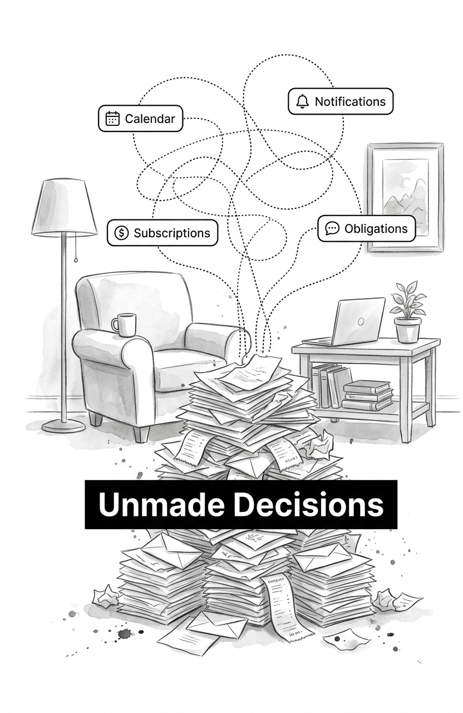
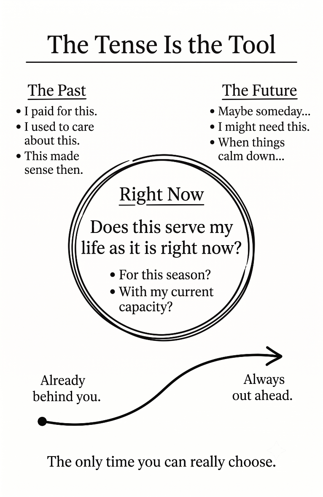
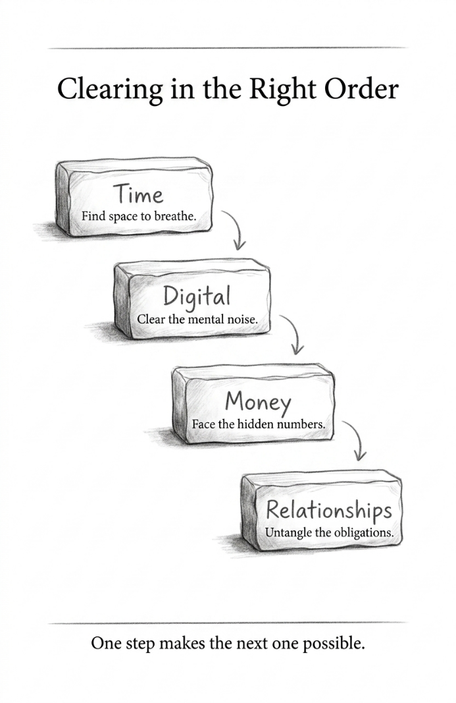
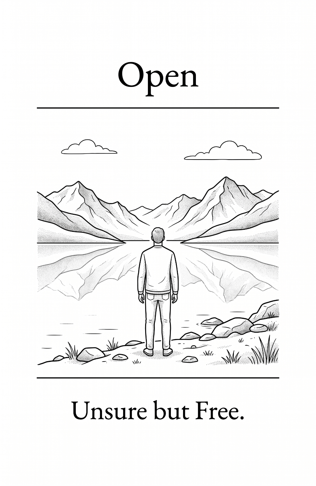
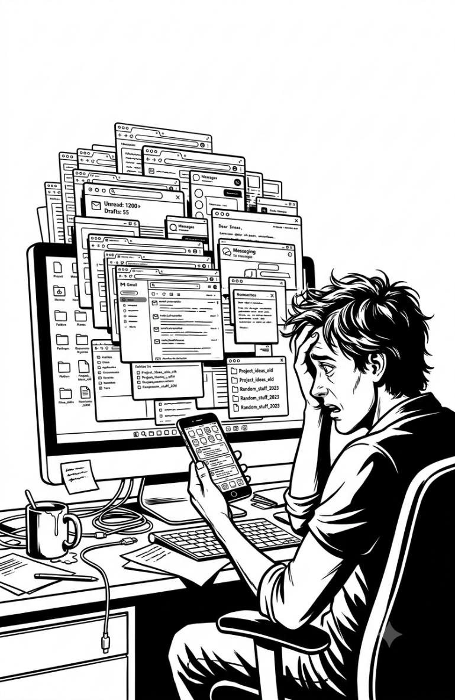
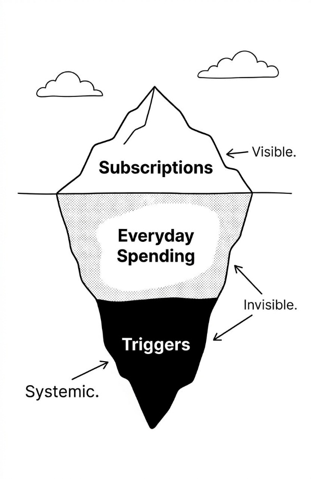
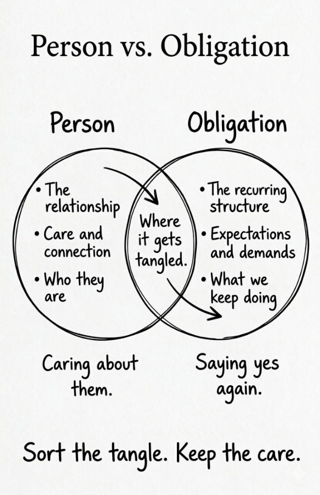

The content contained within this book may not be reproduced, duplicated or transmitted without direct written permission from the author or the publisher.
Under no circumstances will any blame or legal responsibility be held against the publisher, or author, for any damages, reparation, or monetary loss due to the information contained within this book, either directly or indirectly.
Legal Notice:
This book is copyright protected. It is only for personal use. You cannot amend, distribute, sell, use, quote or paraphrase any part, or the content within this book, without the consent of the author or publisher.
Published by Purposeful Living Press
First Edition
Disclaimer Notice:
Please note the information contained within this document is for educational and entertainment purposes only. All effort has been executed to present accurate, up to date, reliable, complete information. No warranties of any kind are declared or implied. Readers acknowledge that the author is not engaged in the rendering of legal, financial, medical or professional advice. The content within this book has been derived from various sources. Please consult a licensed professional before attempting any techniques outlined in this book.
By reading this document, the reader agrees that under no circumstances is the author responsible for any losses, direct or indirect, that are incurred as a result of the use of the information contained within this document, including, but not limited to, errors, omissions, or inaccuracies.
Let me start with something I want you to know before we get into any of this: you are not failing at your life.
I know that’s not how it feels right now. If you’re reading this, chances are your life has that particular quality of fullness that doesn’t feel full in a good way. You got through today. You answered what needed answering, showed up where you were supposed to show up, and kept things moving. And now it’s almost ten at night, you’re sitting somewhere in your house with your phone face-down on the cushion next to you, and you feel an exhaustion that doesn’t quite match what you actually did today.
Your inbox has forty-seven unread messages, at least a dozen of which have been sitting there for two weeks because they require a response you haven’t had the energy to write. There’s a Thursday commitment you’ve been dreading since you agreed to it three months ago, such as a committee meeting, a dinner party, or a favor that ballooned into something bigger. You genuinely cannot remember why you said yes. Last week there was a charge on your bank statement from a subscription you don’t remember starting. And your phone, the one you just turned face-down, buzzed three times while you read that last sentence.
Underneath all of it, quiet and persistent, is the awareness that your life is fuller than you want it to be. You’re not sure how it got this way. You just know it did.
This book is for that feeling.
Maybe you’ve already done some work on your physical home. Maybe you’ve gone through the closets, faced down the garage, filled bags for donation, and actually dropped them off. If you have, think back to the moment a space finally cleared. The way the room seemed to breathe differently. The way your shoulders dropped an inch the first time you walked through the door afterward. That feeling is real. And if clearing your home helped, genuinely helped, but still left you feeling like something was unfinished, there’s a reason for that.
The clutter was never only physical.
Or maybe your home isn’t the problem at all. Maybe your house is reasonably fine and the overwhelm lives somewhere you can’t point to: your calendar, your inbox, your finances, or your social obligations. Maybe you picked up this book because something in the title recognized you before you’d finished reading it. That happens too. Either way, you’re in exactly the right place.
Here’s what I want to tell you before anything else: the clutter in your time, your digital life, your money, and your relationships got there the same way the clutter in a physical space does. Not because you’re disorganized. Not because you made bad decisions. It accumulated because things kept entering those areas of your life without a system to evaluate whether they belonged there. And the culture around you, if we’re being honest, is built to keep that accumulation going.
Your calendar fills because saying yes is almost always easier than the conversation that comes with no. Your inbox fills because an entire industry exists to put things there. Your finances fill with recurring charges because subscription models are engineered to run on autopilot and be forgotten. Your social life fills because social pressure often runs on guilt, not on what you actually want.
You didn’t fail to manage these areas of your life. You were navigating systems designed to accumulate, without the tools to push back. That’s what this book gives you.
And here’s the part I think is most useful to understand before you start: this kind of clutter responds to the exact same principles as physical clutter. The same honest assessment that helped you see your garage clearly will help you see your calendar clearly. The same decision framework that helped you clear a kitchen drawer works on a subscription list. The same maintenance habit that keeps a cleared room from slowly filling back up keeps a cleared inbox from filling back up too.
The principles don’t change. The application does.
Let me give you a brief map of the four areas we’re going to work through together, because it helps to know what’s coming. Not so you can brace for it, but so you can start to recognize the clutter when you see it.
Your time. If your calendar is overcommitted, I want you to know this is not a productivity problem. It is not a scheduling problem. It’s a clutter problem, and it got there the same way a cluttered garage does. One thing at a time, each one making sense on its own, until one day you look up and there’s no room left for the things that actually matter to you. We’re going to clear it the same way: honestly, systematically, and without shame about how it got this way.
Your digital life. The average person has thousands of unread emails. Dozens of apps they haven’t opened in months. Notifications arriving every hour of every day, interrupting meals, conversations, and the ten minutes before bed that are supposed to be quiet. None of this arrived with your full consent. The entire architecture of the digital world is designed to fill your attention, the same way cheap storage units are designed to fill with things you’ll never use. This isn’t a personal failing. It’s accumulation by design, and it can be cleared.
Your money. This is the area most people avoid the longest, because money carries a weight that a cluttered closet doesn’t. I understand that. But here’s what I’ve found to be true: underneath the discomfort, what we’re dealing with is manageable. Subscriptions running on autopilot. Recurring charges from decisions you made three years ago. Financial obligations that accumulated quietly while your attention was elsewhere. I’m not asking you to overhaul your budget or rethink your entire relationship with money. I’m asking you to look at what built up without your attention and make real decisions about it, probably for the first time.
Your relationships. This is the area that requires the most care to name correctly, so let me be clear from the start: this is not about cutting people from your life. The people you love are not the clutter. What we’re looking at is the obligations that have accumulated around your relationships, the commitments made by a version of you that no longer quite exists, maintained by a social inertia that has simply never been examined. The gap between who those relationships were and what they’ve quietly become is where the weight lives.

Four areas. The same problem in each one. The same solution, applied four ways.
What this book is and what it isn’t
Before we go further, I want to be honest with you about what you’re holding.
This book is a catalyst. It’s designed to get you unstuck and into action, not to be a comprehensive life overhaul. It’s a mid-size book, not a lengthy one. It’s completable in a weekend with some dedicated focus. Every page is here because it moves you forward. If a page doesn’t do that, it shouldn’t be in the book, and I’ve tried to hold myself to that standard throughout.
This is not a productivity book. I want to say that clearly because the word “productivity” points in exactly the wrong direction. Productivity is about doing more. This book is about doing less, specifically about removing the accumulated obligations, defaults, and clutter that are consuming your time, attention, money, and social energy without your full awareness or consent. The goal is not optimization. It’s subtraction.
This is not a therapy book either. We’re going to go deep enough in each area to create real action, deep enough to understand why the clutter accumulated and what it’s costing you. But we’re not going deeper than that. If any area of your life involves serious mental health challenges, financial hardship, or relationship dynamics that feel genuinely unsafe, this book is a starting point, not a substitute for professional support. I’ll say that again in the chapters where it’s most relevant, because I mean it.
And this is not a book about cutting people from your life. I know that’s what some people fear when they hear “declutter your relationships.” The chapter on relationships is the most carefully written chapter in this book for exactly that reason. We are not evaluating people. We are evaluating obligations, and the distinction matters enormously.
What this book is: a system. Four areas, four original frameworks for understanding why each one accumulated, four concrete action plans for clearing each one, and four single maintenance habits that keep each one from filling back up. That’s the architecture. It works because the system does the heavy lifting, not willpower, not motivation, and not becoming a different kind of person. You don’t need to become more organized. You need the right tools, applied in the right sequence.
One area per weekend is a sustainable pace. Four weekends, four cleared areas. The whole project is available to you in a month, or you can take longer. What matters is the sequence, not the speed.
What this process will ask of you
I want to be honest about this too, because it’s more respectful than making promises without naming the cost.
This process will ask you to be honest, genuinely honest, about what’s serving you and what isn’t. That’s harder than it sounds, because some of what isn’t serving you will be attached to things you care about. Commitments made to people who matter. Financial decisions you’re not proud of. Social obligations that have become part of how you think of yourself. The honesty required here is real, and I won’t pretend otherwise.
It will ask you to make decisions you’ve been avoiding. The clutter in these four areas accumulated partly because making no decision is always easier than making one. That changes here. Every item you’ve been carrying without deciding about it gets a decision, usually a quick one once you have the right question to ask.
It will be uncomfortable in places. Discomfort, I’ve come to believe, is the sensation of clutter releasing. It’s not a signal to stop. It’s a signal that the work is happening. When you feel it, and you will, recognize it for what it is.
What I will give you in return: a question that cuts through the clutter in every area. A framework for each area that makes the decisions manageable. Scripts for the conversations you’ve been avoiding. And maintenance habits so simple that each one takes less time per month than a single episode of whatever you’re currently watching.
Read Phase I and Phase II completely before you start clearing anything. The mindset work is not optional. It’s what makes the clearing work. Readers who skip to the action chapters and go straight to clearing their calendars or inboxes often find themselves stuck within days, because they haven’t addressed the patterns that created the accumulation. The sequence is the system.
The Declutter Beyond Toolkit — printable worksheets and the full 30-Day Unstuck Protocol — is available as a download. Scan the QR code at the back of this book to get it. The book points. The toolkit delivers.
One question that works everywhere
Before I send you into Phase I, I want to give you the single most useful tool in this book, because I’d rather you have it now than stumble into it in Chapter 2.
Every area of clutter in your life responds to one question, applied with honesty:
“Does this serve my life as it is right now?”
Not the life you’re hoping to have. Not the person you’re planning to become. Not the version of you from three years ago who said yes to something that still appears on your calendar. Your life. Right now. Today.
When you pick up a commitment and feel that particular paralysis, “I should keep this,” “I can’t say no to this,” or “What will they think if I step back?”, that’s the moment to ask the question. If the answer is no, everything else is noise.
I’ll give you area-specific versions of this question in each chapter, because the clutter in your calendar requires a slightly different lens than the clutter in your inbox. But it all comes back to the same honest foundation.
You’ll find that the question is simple and the answer is usually clear. What’s hard is not identifying what doesn’t serve you. What’s hard is giving yourself permission to act on what you already know.
That’s what this book is for.
Before we begin
Do one thing before you turn the page.
Think about what brought you here. Not the general answer, “I want to be less overwhelmed,” or “I want more time,” but the specific one. The real one.
Maybe it’s that you said yes to three things last week that you immediately regretted, and you don’t know how to stop doing that. Maybe it’s that your inbox has become a source of background dread that never fully goes away. Maybe it’s that you looked at your bank statement last month and found charges you didn’t recognize, and felt a shame you didn’t want to examine. Maybe it’s a friendship that has been running on obligation for longer than you want to admit, and every time you leave that person you feel hollowed out rather than filled up.
Whatever it is, that’s your why. And it matters, because there will be moments in this process when the easier path is to close the book, put it on a shelf, and tell yourself you’ll come back to it. Your why is what gets you through those moments.
Write it down. Literally, right now, on the inside cover or in a notebook. Not “I want a calmer life,” but the specific thing. The commitment you wish you hadn’t made. The inbox number that made you put the phone down. The line on the statement you couldn’t explain.
That specific thing is what you’re going to work on, one decision at a time.
I know that because I’ve seen it, not just once, but consistently, across people who do this work honestly and all the way through. The relief is real. The spaciousness is real. The clarity that comes from a calendar that actually reflects your values, a digital life you’ve consciously chosen, a financial picture you understand, and a social life that leaves you energized: that’s available to you. Not as a fantasy version of your life, but as your actual life, cleared of what accumulated without your permission.
That’s worth some temporary discomfort. Turn the page when you’re ready.
PHASE I
THE MINDSET — WHY YOUR LIFE FILLED UP
Why Your Life Filled Up — And Why It’s Not Your Fault
CHAPTER 1
Why Your Life Filled Up — And Why It’s Not Your Fault
“Is what I’m holding the result of choices I consciously made, or is it accumulation I never chose to allow?”
I want to tell you about the way it usually starts. It starts with yes.
One yes. A reasonable yes. A committee you joined because you cared about the cause. A subscription you started because it seemed useful. A Thursday dinner that felt like exactly the kind of thing you should do more of. A friendship you invested in because this person was wonderful and you genuinely wanted to know them better. A commitment that made complete sense on the day you agreed to it.
Then another yes. Different context, same logic. It makes sense today. It serves a real purpose. It helps someone you care about. Yes.
And then another.
At some point, and you can never quite identify when, the weight of all the yeses stopped feeling like a full life and started feeling like a trap. The calendar that should represent your choices starts representing your obligations. The inbox that was supposed to help you stay connected becomes something you dread opening. The bank statement shows charges you half-recognize from decisions made months or years ago. Social commitments get attended because you said you would, not because you want to.
You didn’t build this life carelessly. You built it one reasonable decision at a time. Somewhere along the way, the accumulated weight of all those reasonable decisions became unreasonable.
That’s not failure. That’s how this kind of clutter works.
The Accumulation Problem
Here’s the thing about physical clutter that most people recognize once someone points it out: it doesn’t accumulate because you’re careless. It accumulates because things keep entering your home without a system to evaluate whether they belong there. Wedding gifts from fifteen years ago that you’ve been storing out of obligation. Purchases that seemed like good ideas until they arrived. Items inherited from people you loved, which means they carry weight beyond their function. Things you’ve been keeping “just in case” since a version of your life that no longer exists.
One by one, every single item had a reason to enter. Not one of them was obviously wrong at the time. The problem was never any individual item. The problem was the absence of a system to evaluate what was coming in, plus a growing pile of decisions that never got made.
The clutter in your time, your digital life, your money, and your relationships accumulated the same way.
With one important difference.
The systems filling these areas of your life are not passive. They’re often external, deliberate, and designed to operate below your awareness. The garage doesn’t fill itself. But your inbox has an entire industry behind it, working continuously to put things there. Your social calendar fills because saying yes is almost always easier than having the conversation that comes with no, and the culture around you rewards busyness with status. Your finances fill with recurring charges because subscription models are designed to be started easily and then forgotten. Autopilot is the business model.
So you were not navigating a neutral environment. You were navigating systems built to accumulate, without the tools to evaluate and clear them. That distinction matters because it moves the explanation from character to circumstance. You didn’t “let” this happen. It was set up to happen.
That’s what this book addresses. Not the symptom, the accumulated weight, but the system that created it.
Why Each Area Costs More Than You Think
Before we clear anything, I want to spend some time in each of the four areas. Not to audit them yet, just to name honestly what the accumulation is actually costing you. Most people underestimate this because the costs stay invisible until you look straight at them.
Your Time
Time is the only truly nonrenewable resource in your life. Every other resource, money, energy, even relationships, can be recovered, rebuilt, or replenished to some degree. An hour spent on a commitment you didn’t consciously choose is an hour that is permanently unavailable for what you actually value.
Calendar clutter doesn’t just waste time in the obvious sense of filling hours. It creates a specific and exhausting cognitive load that runs in the background: that awareness, beneath everything else you’re doing, that there are obligations you’re dreading. That Thursday thing. The committee meeting you’ve been trying to mentally prepare for. The recurring event that stopped feeling meaningful two years ago but still pops up every month.
That exhaustion at the end of a day that didn’t even feel productive? A significant portion of it comes from carrying obligations that were never fully chosen. That’s not a productivity problem. It’s a weight problem. And weight can be set down.
Your Digital Life
Digital clutter creates the same mental load as physical clutter. But because it’s invisible, most people don’t recognize it as clutter at all. They just feel the effects: a persistent, low-grade anxiety when they pick up their phone. The inability to be fully present in a conversation because part of the brain is always monitoring for the next notification. The exhaustion of an inbox that is always fuller than it was yesterday, no matter how much time you spent on it today.
Those thousands of unread emails aren’t just an organizational problem. They are thousands of unmade decisions. Each one creates a tiny thread of anxiety, and the combined weight of thousands of tiny threads is not tiny at all. It’s a background hum of unfinished business that never fully goes quiet.
Every notification that interrupts you, during dinner, in a conversation with your child, in the ten minutes before bed that are supposed to be quiet, is not a small inconvenience. It’s your attention, your most valuable cognitive resource, being redirected without your consent. You didn’t grant permission for that interruption. It arrived because a default was never changed. (I’m ruthless about notifications on my own phone for exactly this reason.)
The digital world is not designed for your wellbeing. It’s designed for your engagement. Those are not the same thing.
Your Money
Financial clutter has a direct, measurable cost that the other areas don’t: actual money leaving your account every month for things you didn’t consciously choose this month. The forgotten subscription. The free trial that converted to paid twelve months ago and has been renewing quietly ever since. The service you used once and meant to cancel. Duplicate charges for two accounts doing the same thing.
Most people, when they do a careful statement audit for the first time, find somewhere between $80 and $200 per month in charges they can’t immediately account for. That’s not pocket change. That’s roughly $1,000 to $2,400 a year in money that left without your full awareness. And that’s before we get to spending patterns designed to exploit specific emotional vulnerabilities: stress shopping, sale shopping, aspirational purchasing for a version of yourself you’re still planning to become.
Financial clutter is also the most shame-laden of the four areas, which is precisely why it tends to go unexamined the longest. Money carries a social and moral weight that a cluttered closet doesn’t. When we find charges we can’t explain, the response is often shame rather than curiosity, and shame shuts the door on honest examination. I want to name that directly because the shame is exactly what the companies charging you are counting on. Embarrassment keeps the autopilot running.
Your Relationships
Relationship clutter is the most sensitive of the four areas, and also the most misunderstood. Let me be precise about what it is, because precision matters here.
This is not about the people you love. The people in your life are not clutter.
What accumulates is the obligations around those relationships: commitments made by a version of you that no longer quite exists, maintained by a social inertia that has simply never been examined. The monthly dinner that felt meaningful when the friendship was at a different intensity. The group chat that once felt like genuine community but now mostly creates a sense of obligation to respond. The recurring family commitment that you attend fully and leave feeling hollowed out rather than connected.
Every one of these obligations started as something genuine. That’s what makes them hard to examine, because questioning the obligation can feel like questioning the relationship, and questioning the relationship can feel like betraying the person. But the obligation and the relationship are not the same thing. And the gap between who some of these relationships were and what they have quietly become, that gap is where the weight lives.
Carrying that weight costs you something beyond time. It costs you presence. Every hour spent in obligatory connection is an hour unavailable for genuine connection, and genuine connection is what actually restores you.
The Four Barriers That Make This Harder Than Decluttering a Closet
If clearing these areas were as straightforward as clearing a cluttered room, most people would have done it already. The fact that they haven’t isn’t a discipline problem. It’s a barrier problem. There are four of them, and each one is worth naming before you try to work through it.
Barrier 1: You can’t see it
You couldn’t ignore a cluttered garage. It’s visible every time you pull into the driveway. You can ignore an overcommitted calendar, especially when everyone around you has an equally overcommitted calendar and busyness is treated as evidence of a life well lived.
The first barrier to clearing these areas is learning to recognize the accumulation as clutter at all. It is. A thousand unread emails cost you what a thousand items in an overfull storage unit cost you: ongoing maintenance energy, background anxiety, and the inability to find what you actually need when you need it. The social obligation you show up for and leave depleted costs you what the furniture you never use but can’t walk past without feeling vaguely guilty costs you. The cost is real, even when the clutter is invisible.
Part of what this chapter is doing, and what Phase I is doing more broadly, is making it visible. Once you can see it clearly, the same tools that cleared your physical space can clear this, too.
Barrier 2: Other people are involved
You can donate a kitchen appliance without telling anyone. You can’t quietly unsubscribe from a Thursday commitment without a conversation. You can’t cancel a recurring social obligation without the possibility of disappointing someone who matters to you. You can’t reduce a friendship’s frequency without the other person potentially feeling the change.
Every area in this book involves other people, which means clearing it requires navigating relationships, expectations, and the very real fear of being seen as selfish, flaky, or unkind. That fear is legitimate. It’s also often larger than the actual consequence. Most conversations that feel impossible in advance are manageable in practice. The chapters ahead address this directly and practically, with actual language, not just permission.
Barrier 3: Your identity is entangled
Your commitments tell a story about who you are. The committees you sit on, the causes you show up for, the friendships you maintain, the financial choices you’ve made: all of it is connected to your sense of self. Clearing these areas requires not just deciding what goes, but examining who you are without the things that go.
That’s harder than clearing a closet. It can also be more freeing, because what you’re really examining is whether your current life is built around who you actually are, or around accumulated commitments to who you used to be, who you thought you should become, or what other people needed from you. When those come apart, what’s left is something more genuinely yours.
The entanglement is real, and worth naming. You may discover, in working through one of these areas, that a commitment you thought was optional is actually load-bearing. It’s serving a function in how you think of yourself that you hadn’t fully recognized. That’s useful information. The goal is never to clear reflexively. The goal is to clear with honest awareness of what you’re actually releasing.
Barrier 4: The volume stops you before you start
Thousands of unread emails. Seventeen recurring calendar commitments. Seven subscription services, four of which you can’t immediately name. A social calendar with six things in the next three weeks that feel obligatory.
The volume of accumulated clutter in these areas is often so overwhelming that the only available response feels like closing the app and deciding to deal with it later. And then closing the app again. And then making a plan to finally deal with it this weekend. And then not dealing with it this weekend because where would you even start?
The system in this book is designed to address volume at the category level rather than the individual item level. You do not need to make thousands of decisions. You need to make a handful of category-level decisions that resolve thousands of items at once, the same way deciding to donate all the books you haven’t opened in five years resolves a shelf’s worth of individual decisions in one move. The chapters ahead build that architecture. But it starts here, with understanding why the volume accumulated and why that’s not a reflection of who you are.
A Word About Why This Happened to You Specifically
I want to spend a moment on something that doesn’t usually get said directly in books like this, because it matters for what comes next.
You are probably, by most measures, a responsible and caring person. The clutter in your time accumulated partly because you care about things, about causes, about people, about doing your part. You said yes because yes felt like the right thing to do for someone you love, for a community you care about, for a version of yourself you were trying to become. The clutter in your digital life accumulated partly because you wanted to stay connected and informed. Financial clutter accumulated partly because you were trying to invest in your health, your growth, your family’s wellbeing. Relationship clutter accumulated partly because you value people and find it genuinely difficult to disappoint them.
Good values, poorly protected, produce overwhelm. That’s the mechanism. Not carelessness. Not a character flaw. It’s a set of genuine values operating without a system to protect them from the accumulation that goodwill generates.
Understanding this matters because the goal of the clearing work ahead is not to become someone who says no more easily, feels less, or cares about fewer things. The goal is to build a system that protects your actual values from the accumulation that has been obscuring them. You’re not working toward a smaller life. You’re working toward a life that fits.
The Permission You Need Before You Begin
Some of what follows in this book will require you to do things that feel uncomfortable. Say no to someone who expected yes. Cancel something that carries a small charge of guilt. Step back from a social commitment that has been generating obligation without generating connection. Look honestly at a bank statement line you’ve been glossing over.
Before any of that, I want to be explicit about the permission you’re holding.
You have permission to have a calendar that reflects your actual values. Not everyone else’s expectations of what your calendar should contain. Not an accumulation of past commitments made by a version of you that has since changed. Just what you actually want and need your time to hold.
You also have permission to have a digital life that serves you rather than summons you. To open your phone and find tools you chose, not obligations you never agreed to. To experience a meal, a conversation, an hour before bed, without being interrupted by something that slipped into your notification settings because you never changed the default.
You have permission to look honestly at your financial life without shame. The charges you’ve been avoiding examining are not evidence of who you are. They’re evidence of systems designed to operate below your awareness. Looking at them clearly is not an indictment. It’s the first step back to real choice.
And you have permission, this one is the most important and the hardest, to have a social life that leaves you energized rather than depleted. To care deeply about people and still recognize that some of the obligations accumulated around those relationships no longer match the current reality of those relationships. To love someone and need less of them right now. To release an obligation without releasing the person.
These permissions aren’t selfish. They’re the conditions under which you can show up fully for what actually matters: the commitments you’ve genuinely chosen, the connections that restore you, the work that is actually yours to do.
The clutter in these four areas of your life is not evidence of failure. It is the natural result of navigating modern life without the tools to evaluate and clear it. You have those tools now.
That’s what this book is for.
In the next chapter, we’re going to look at the one question that works across all four areas, why it works, and what makes it harder to apply here than it was when you were holding a kitchen appliance. Then we’ll build the infrastructure for the clearing that follows.
For now, hold on to this: you didn’t fail to manage these areas of your life. You were up against systems designed to fill them, and you weren’t given a way to push back.
Next, we change that.
The Question That Works Everywhere
CHAPTER 2
The Question That Works Everywhere
“Did I decide this — or did I just never decide otherwise?”
Here is what it feels like, when the question finally works.
You’re looking at something on your calendar — a monthly obligation, something you’ve been attending for two or three years. And for the first time, instead of just bracing for it, you stop and ask yourself honestly: does this serve my life as it is right now?
And immediately, before you can even answer, your brain starts generating arguments. You said you would. People are counting on you. It’s only a few hours a month. Stepping back would be awkward. You’ve been doing it for years. It would feel like quitting.
But here’s the thing: not one of those arguments answered the question. Every single one of them was about the past, or about other people’s expectations, or about avoiding discomfort. Not one of them said: yes, this serves my life as it is right now.
And in that gap — between the question and the arguments your brain threw up to avoid answering it — the answer was already there. You already knew. You’d known for a while. What you hadn’t had was the right question to make the knowing undeniable.
I’d be willing to bet that as you read that, something specific came to mind. A commitment, a charge, an obligation, a subscription. Something you half-recognized yourself in. That’s not an accident. That’s the question working on you right now, before we’ve even properly introduced it.
That’s what this chapter is about.
The Question
The question itself is simple:
“Does this serve my life as it is right now?”
You may have met it before if you’ve worked on your physical space. The reason it works there — and the reason it works equally on a calendar, a subscription list, a social obligation — is that it forces the evaluation into the present tense. That’s the mechanism, and it’s worth understanding clearly.
When you’re holding onto something you should let go of, your brain doesn’t defend the present. It defends the past and the hypothetical future. I paid good money for this. It used to matter. I might need it someday. The “someday” argument. The “once upon a time” argument. The “what if” argument. Every one of those arguments evaporates when the question is “right now.”
The past and the hypothetical future are where clutter lives. “Right now” is where the question clears it. The tense is the tool — and it works identically on a committee you’ve been attending out of momentum as it does on a drawer full of kitchen gadgets you stopped using years ago.

The Part That Surprises People
For most of the clutter in your calendar, your inbox, your finances, and your social life — you already know the answer.
You already know which commitment you dread. You already know which subscription you haven’t used in four months. You already know which recurring charge you’ve been meaning to look into since last spring. You already know which social obligation consistently leaves you hollowed out. You’ve known for a while. In some cases you’ve known for years.
The question doesn’t generate the answer. It surfaces the answer you’ve already reached but haven’t yet been willing to act on.
This is both more efficient and more uncomfortable than people expect. More efficient, because you don’t need to deliberate — you need to see clearly and then give yourself permission. More uncomfortable, because once the question makes the answer undeniable, the only thing left is to decide what you’re going to do about it.
The obstacle, in almost every case, is not information. It’s permission. And the things that block permission — the reasons the answer stays buried even when you already know it — are worth naming directly, because named obstacles lose some of their power.
What Makes It Harder Here Than in a Kitchen Drawer
When the question is about a physical object, the stakes are relatively contained. The object doesn’t have feelings. Donating it doesn’t require a conversation. If you’re wrong, the consequences are manageable.
The question is the same when you apply it to your time, your digital life, your money, and your relationships. The stakes are different.
Other people are involved
You can donate a kitchen appliance without telling anyone. You cannot quietly step back from a Thursday commitment without a conversation. You cannot reduce a social obligation without the possibility of disappointing someone who matters to you. You cannot look honestly at a financial pattern without confronting decisions that affected people you love. Every area in this book involves other people — and that relational weight is real, not imaginary, and it doesn’t disappear because you’ve decided to clear some things out.
What makes this genuinely hard — harder than deciding the fate of a kitchen gadget — is that the fear of disappointing people is often indistinguishable from genuine consideration for them. They feel the same from the inside. Both show up as reluctance. Both generate reasons not to ask. The difference is in what the reluctance is actually protecting: the relationship, or your comfort with avoiding the conversation.
This is not a reason to skip the question. It is a reason to be honest with yourself about which kind of reluctance you’re experiencing. The chapters ahead give you specific language for the conversations that some of these answers will require. But the first step is simply letting yourself know what’s true — because not knowing doesn’t protect anyone. It just keeps you holding obligations you never consciously chose.
Your identity is entangled in the answer
Physical objects can usually be evaluated without touching your sense of self. The clutter in these four areas often cannot. The committees you sit on, the causes you show up for, the way you manage your money, the friends you make time for — all of it is connected to the story you tell about who you are.
When the question reveals that something no longer fits, it can feel less like “this item should go” and more like “part of my identity is being called into question.” That’s a higher-stakes evaluation than standing in front of a drawer of kitchen gadgets, and the discomfort it generates is proportionally larger.
The identity entanglement is also, however, the reason the clearing is so much more liberating than clearing a closet. When you remove something that was never really yours — a commitment you inherited, an obligation maintained by inertia, a financial pattern running on autopilot from a version of your life that no longer exists — what’s left is more genuinely you. The clearing in these areas doesn’t diminish your identity. It clarifies it.
The decisions feel more permanent than they are
With physical clutter, there’s usually a safety net. Maybe boxes. A six-month waiting period. The knowledge that if you donate something and regret it, you can likely replace it. The decision feels contained because the consequences feel reversible.
With the clutter in these areas, the decisions can feel like they close doors permanently. What if I step back from this and regret it? What if I cancel this and then want it back? What if I reduce contact with this person and something breaks that can’t be repaired?
Two things are true here. First: most of these decisions are considerably more reversible than the anxiety around them suggests. You can rejoin things. Resubscribe. Friendships are more resilient than the fear of losing them implies, and a reduced frequency is not the same as an ending. The permanence is usually a feeling, not a fact.
Second: the cost of not deciding is also a cost. Every week you carry something you already know isn’t serving you is a week of energy and presence spent on something that isn’t genuinely yours. That cost is quiet, ongoing, and invisible — which is why it doesn’t trigger the same alarm as the discomfort of change. But it accumulates. The question isn’t asking you to act carelessly. It’s asking you to see the full ledger: not just the cost of releasing, but the cost of continuing to carry.
The Four Versions of the Question
The harder material is behind you now. What follows is practical — the same question, tuned for each area’s specific resistance, ready to use.
Each area has its own particular fog — its own set of reasons the answer stays obscured. These versions are designed to cut through each one directly.
For Your Time
“Does this commitment serve my life as it is right now — or did it serve a version of my life that no longer exists?”
Calendar clutter persists not because the commitment was ever wrong, but because it was right for a version of your life that has since changed — a different job, a different family configuration, a different season of energy and capacity. The commitment outlasted the context that made it sensible.
When you ask this about a recurring commitment, notice the tense of your justification. If your defense is primarily in the past — “I joined because…”, “I said I would…”, “it used to be…” — rather than the present — “it currently gives me…”, “I genuinely look forward to it…” — that tense shift is the answer.
For Your Digital Life
“Does this account, app, subscription, or notification serve my life as it is right now — or is it simply there because I never made the decision to remove it?”
Most digital clutter arrived by default — not by active choice, but by the absence of a decision to decline. You didn’t choose most of the emails in your inbox. You didn’t consciously decide to keep the apps you haven’t opened in months. The default was to receive, and the default has been running ever since.
This version of the question makes “I never decided to remove it” a valid and complete reason to remove it now. Presence by default is not the same as presence by choice, and you don’t need a stronger justification than that.
For Your Money
“Did I consciously choose this expense this month — or did it accumulate by default?”
Notice that this version doesn’t ask whether the expense is worth the money, or whether you can afford it, or whether it’s objectively reasonable. It asks only whether you chose it. This month. Consciously.
Most financial clutter doesn’t survive that question — not because the charges are unreasonable, but because conscious choice this month is a higher bar than autopilot spending can clear. The point is not to generate guilt about past choices. The point is to establish conscious choice as the standard for what stays.
For Your Relationships
“Does this commitment reflect who I am and what I value right now — or does it reflect a relationship or role from a chapter of my life that has changed?”
This is the most carefully worded of the four, because the territory is the most sensitive. Note precisely what the question is evaluating: the commitment, not the person. A relationship can be genuinely important and the obligations accumulated around it can still no longer match its current reality. The question separates those two things, because conflating them is exactly what makes the relationship area so difficult to examine.
When the commitment and the relationship are genuinely aligned — when you’re showing up because you want to and you leave feeling more connected than when you arrived — this question resolves quickly. When they’re not aligned, it reveals that too. What you do with that clarity is yours to determine with care. But the clarity itself is not a threat to the relationship. It’s just an honest look at it.
The Question Is Not a Verdict
Before you take this question into the work ahead, I want to be clear about what it is and what it isn’t.
It is a tool for seeing clearly. It is not a mandate to eliminate everything that doesn’t deliver immediate value. Life is not a productivity system, and this book is not asking you to treat it like one.
Some things you carry because of love, because of loyalty, because of values that extend well beyond what is convenient for you right now. Some commitments are worth more than their immediate return. Some relationships require tending through seasons where the reciprocity is unequal. Some financial choices are investments in something that hasn’t fully paid off yet but will. The question surfaces all of that honestly.
“Does this serve my life as it is right now?” — answered with genuine honesty — sometimes produces a clear yes for things that are hard, demanding, or not immediately pleasurable. Caring for an aging parent is not easy, but it serves your values right now. A difficult professional commitment might serve your long-term direction right now. A friendship moving through a hard season might still be exactly what you want to tend right now.
Those are conscious choices, and conscious choices belong in your life. What doesn’t belong is what you’ve been carrying without ever deciding to. The question is for that — and only that.
Before You Move On
Phase I ends here. Before you move into Phase II — where we build the assessment and action plan that makes the clearing concrete — I want you to do one thing.
Think of one item from each area of your life. Not the hardest one. Not the one requiring the most difficult conversation or the most complicated decision. Just one thing in each area that, if you’re honest with yourself, you already know the answer to.
One calendar commitment that you dread rather than anticipate.
One thing in your digital life that is there by default rather than by choice.
One recurring charge you couldn’t clearly explain if someone asked.
One social obligation that consistently leaves you more depleted than when you arrived.
Write them down. You don’t have to do anything about them yet — Chapter 3 builds the structure for that. But write them down.
You’ve been holding these things without deciding to. Deciding starts here.
PHASE II
THE ACTION PLAN — BEFORE YOU START CLEARING
Building Your Life Assessment and Action Plan
CHAPTER 3
Building Your Life Assessment and Action Plan
“Looking clearly is not the delay before the work. It is the work.”
At some point, you started. Maybe you canceled two subscriptions and felt briefly lighter. Maybe you cleared a weekend, protected it, and then watched it fill back up within a month. Maybe you finally had a conversation you’d been avoiding, it went better than you feared, and then six weeks later you were right back where you started.
The problem was never motivation. You had that. It was never awareness. You already knew something needed to change. And it was never even time, not really. It was something quieter, and more specific, than any of those.
You didn’t know what “done” looked like. Without a clear picture of where you’re starting from and what you’re trying to build toward, every decision in the clearing eventually stalls. Not because you lack will, but because you lack orientation. You were navigating without a map. And without a map, you end up back where you started, not because you failed, but because the terrain was never charted.
This chapter charts it.
It doesn’t do the clearing. That comes in Phase III. What it does do is lay the foundation that makes clearing stick: a clear-eyed picture of what each area actually contains, what it’s costing you, and what you want it to look like instead. Five steps. Less time than one failed clearing attempt. And the difference, I’d argue, between trying again and actually finishing.
Before You Touch Anything
Here’s what happens when you skip this chapter and go straight to the clearing. The first few decisions come easily. The obvious subscriptions, the commitment you’ve been dreading for months, the apps you haven’t opened since last year. That part feels good. Then you hit something ambiguous: a commitment tied to a person who matters, a subscription that might be worth keeping, a financial obligation you can’t quite evaluate. Without a clear picture of what you’re working toward, the decision stalls. Then another one stalls. Momentum drains, the clearing stops, and the areas quietly refill.
What the five steps give you is something different: a complete picture of where you’re starting from, a clear sense of what it’s costing you, and a specific idea of what you’re building toward. With that in place, the decisions in Phase III stop being negotiations and start being comparisons. You’re no longer asking, “Should I keep this?” You’re asking, “Does this fit the life I’ve already decided I want?” That’s a faster, more honest question, and it produces decisions that hold.
That’s what the five steps are for. Work through all of them before touching a single calendar item, subscription, or social obligation. The clearing is faster because of them, not in spite of them.
Step 1: The Honest Inventory
The items you identified at the end of the last chapter, one from each area, are a starting point for the inventory below.
First, take stock. Don’t evaluate yet. That comes later. Just look.
Most people have a partial picture of their time, their digital life, their finances, and their relationships. They know the specific commitment they dread, the subscription they’ve been meaning to cancel, the social obligation that exhausts them before it begins. What they usually haven’t done is see the full picture of any one of those areas at once, let alone all four together. The inventory is that picture. It’s a census, not a judgment. You’re recording what’s there, not deciding what to do about it. The deciding comes later.
Decisions made without the full picture tend to feel right in the moment and wrong a week later. Work through each area and write down what you find. Be specific and honest. Not brutal, honest. This is the first act of genuine attention you’ve paid to these parts of your life in a long time, possibly ever.
Your Time
Time clutter is the hardest to see because busyness can pass as a virtue. It looks like engagement, commitment, a full life. Look past the optics. How many recurring commitments do you have this month, professional, personal, family, community? How many did you actively choose at some point, and how many did you drift into over time? When you open your calendar and look at the next four weeks, what’s the first feeling that shows up: capable, or heavy? And underneath the committed hours, what’s consistently missing that you genuinely want to be there?
Your Digital Life
Digital clutter is the most normalized of the four. A lot of people have quietly accepted that their inbox is unmanageable and their phone is a source of constant interruption. Don’t accept that yet. How many unread emails are currently in your inbox? How many apps on your phone have you opened in the last week, actually opened, not just seen via a notification? How many times a day does your phone interrupt you with something you didn’t request? How many digital subscriptions are you currently paying for? Write down every one you can name. The ones you can’t name matter, too. They’ll surface in the next step.
Your Money
Financial clutter hides in the automatic and the forgotten. Pull up last month’s bank or credit card statement. How many recurring charges appeared? How many could you have named before you looked? What’s your approximate monthly total on subscriptions and recurring services? This isn’t a budget analysis, just an honest number. Are there charges that appear without your immediate recognition?
Your Relationships
Relationship clutter is the most emotionally loaded of the four because other people are attached to every item on the list. Set that aside for now and just look. How many recurring social commitments do you have, monthly dinners, standing plans, regular obligations? What genuine connection is currently missing from your life, the kind you keep meaning to make room for? After which commitments do you consistently leave feeling more energized than when you arrived, and after which do you leave feeling more depleted? How many exist because you genuinely want them, versus because ending them feels harder than continuing?
Write all of it down. The inventory is the before picture, the starting point you’ll measure against and, later, use to see what’s actually changed. Once you have it, the next step asks the harder question: not what is there, but what it’s costing you to keep it.
Step 2: The Honest Cost Assessment
The inventory tells you what’s there. This step asks what it’s actually costing you.
Most people have never done this. Not because they don’t sense the cost, the background exhaustion, the low-grade anxiety, the awareness that something is off. But sensing a cost and naming it precisely are different acts. Naming it means looking directly at what you’ve been skimming past, and that can be uncomfortable. Still, once you do it, things get clearer fast. When you can see the full ledger, every decision in Phase III becomes easier to make and easier to stick with. For each area, estimate four things. Take them in order, because they build on each other.
The time cost: how many hours per week are consumed by commitments you didn’t consciously choose? By digital management, the inbox triage, the notification responses, the passive scrolling that fills the gaps between tasks? By social engagements you attend but don’t want to be at? Add these up. The total is usually larger than people expect, and seeing it as a number changes how heavy it feels.
The financial cost: from your inventory, what’s your monthly spend on subscriptions and recurring services you either don’t use or wouldn’t consciously choose today? This number doesn’t need to be precise. An honest estimate is enough. For most people, it lands somewhere between surprising and genuinely alarming.
The energy cost: this one doesn’t come with a clean number, but it’s real. It’s the cognitive and emotional weight of holding each area’s clutter. The commitments you’re dreading. The inbox you’re avoiding. The financial obligations you’re not examining. The social engagements you’re tired of before they even arrive. Name the weight, even if you can’t quantify it. Naming it makes it concrete in a way that vague sensing never does.
The opportunity cost: the most important of the four, and the one almost nobody examines. What’s absent from your life because these areas are full? What have you been meaning to do, create, build, pursue, or simply be present for, but there’s no room because everything else has taken it? That’s the cost that makes the other costs matter. It’s also the one that will carry you through the tougher decisions ahead.
This assessment isn’t about judging yourself. It’s about seeing clearly what you’re paying, in time, money, energy, and opportunity, for clutter you didn’t consciously choose. Once that picture is complete, you’re ready for the step most people skip entirely. It’s also the step that makes everything else work.
Step 3: Knowing What You’re Clearing Toward
Before any clearing begins, you need to know what you’re clearing toward.
That sounds obvious. It almost never gets done. Most clearing attempts begin with a list of things to remove: the commitments to drop, the subscriptions to cancel, the social obligations to reduce. The problem with starting from subtraction is that you hit resistance fast. Every commitment had a reason it was added. Every subscription had a justification. Every social obligation has a person attached to it. Without a positive picture of what you’re protecting, every decision becomes a negotiation between the present cost and the historical reason, and the historical reason usually wins.
Knowing what you’re clearing toward changes the nature of every decision that follows. You move from “Should I keep this?” to “Does this serve what I’ve already decided I want?” That shift, from defense to direction, is what makes clearing work when subtraction alone has failed.
For each area, write down what you want it to look and feel like. Not the aspirational ideal, not the fantasy of a life entirely free from obligation. Write the version that would feel right to you, in your actual life, right now. Honest and specific:
“I want a calendar where every commitment is something I genuinely want or need to be at.”
“I want an inbox I can clear in twenty minutes on a Sunday evening.”
“I want to know exactly what I’m paying for every month, and to have consciously chosen every item on that list.”
“I want a social life that leaves me more energized at the end of a month than at the beginning.”
Write yours down. Put them somewhere you’ll actually see them during the work ahead. They aren’t aspirational slogans. They’re the standard everything in Phase III gets measured against. The clearing isn’t about cutting as much as possible. It’s about getting each area closer to this picture.
Once you have your four statements, the next step explains the order you’ll work through them, and why that order matters more than it might seem.
Step 4: The Sequencing Strategy
The instinct at this point is to jump to the area that’s bothering you most and start there. I get it. But the sequence matters, and here’s why.
Each area builds the clarity and emotional grounding you’ll need to work honestly in the next. This order is simply where that carryover tends to work best.
Your time comes first because clarity about how you want to spend your time is the foundation everything else sits on. Financial decisions make more sense when you know what your hours are worth. Social decisions get cleaner when you know what you’re trying to protect. The time work isn’t just one of four areas. It’s the lens that makes the other three easier to read. You can’t evaluate anything else honestly until you know what you’re actually for.
Your digital life comes second because it’s the most concrete and immediately actionable of the four. The decisions are clearer, the tools are more mechanical, and the wins show up faster than anywhere else. A cleared inbox delivers the same specific satisfaction as a cleared kitchen counter. It’s visible, immediate, undeniable. That satisfaction matters. It builds momentum and confidence for the more sensitive work ahead, and it proves, at a felt level, that clearing is possible. (If I’m being honest, this is the stage where I usually notice the first real drop in day-to-day irritability, because the constant little pings finally quiet down.)
Your finances come third because financial clarity tends to require the emotional steadiness built in the first two areas. Finances carry a weight that calendar commitments and email subscriptions don’t. They’re often the most shame-laden of the four, and approaching them cold can create a different, more defensive kind of honesty. When you arrive after two rounds of successful clearing, you bring momentum, reduced resistance, and a clearer sense of what you actually value.
Your relationships come last because this is the most sensitive area in the book, and it asks for everything you’ve built before it. Other people are involved. Identity is tangled up in the choices. The fear of being seen as cold or selfish is real, and it doesn’t disappear just because you tell yourself it shouldn’t matter. The clarity built across the first three areas, a defined picture of what you value, the practice of asking the hard question, the relief of letting go of what doesn’t serve you, creates the footing this area requires. You arrive here with proof that clearing works and enough grounding to look at something genuinely difficult without flinching.

Follow the sequence. It was built for exactly the kind of work you’re about to do. Before you begin, there are three tools worth having in hand.
Step 5: The Three Working Tools
Every area in Phase III will have moments where a decision stalls, where maintenance feels uncertain, or where something new arrives and you’re not sure what to do with it. These three tools exist for those moments. I’m introducing them here, before the clearing begins, so you can reach for them when you need them instead of stopping mid-work to learn them.
The Single Maintenance Habit Principle
Every area in Phase III ends with a small set of lightweight maintenance practices. They’re anchored by one primary question or action, with a handful of supporting habits that take minutes rather than hours. Not a weekly review process. Not a recurring audit. Not a complex system with multiple checkpoints. Just a primary habit, applied consistently, supported by a few simple practices that keep each area clear without becoming a burden.
This isn’t a concession to laziness. It’s a design choice based on what works in real life. Complex maintenance systems fail because life intervenes: a busy week, a disrupted routine, a season that throws everything off. A small set of simple habits survives because each one asks for only one decision point. Clutter builds through the absence of small, consistent decisions. It stays away through their presence. A few lightweight practices, done every time, outlast any system that requires the right conditions to hold.
The 30-Day Unstuck Protocol
Some decisions won’t resolve cleanly during the clearing work. A commitment you can’t evaluate clearly. A subscription you keep reconsidering. A social obligation tied to complicated feelings. For any genuinely difficult decision in any area, the protocol is simple: note it with today’s date, set a thirty-day reminder, and leave it alone.
At thirty days, ask one question: Have you missed it, needed it, or thought about it with genuine desire? If the answer is no, the decision is already made. The thirty days didn’t postpone it. They exposed it.
The Declutter Beyond Toolkit includes a printable version of this worksheet, plus an expanded protocol for when you’ve made the decision but can’t act on it. It’s a download — scan the QR code at the back of this book to get it.
The Conscious Entry Rule
When something new arrives in any area of your life, that’s the decision point. Not at the end of the month. Not when the area starts feeling full again. Now, at the moment of entry, before accumulation becomes the default.
A new commitment lands in your inbox. A free trial converts to a subscription. An invitation arrives for something that will recur. A group chat appears on your phone. These aren’t neutral events. They’re entry points, and entry points are where accumulation happens either by default or by choice. The shift this rule asks for isn’t a system with steps. It’s a single change in orientation: nothing new enters an area without a moment of honest evaluation. Not a long evaluation. Not a formal process. A moment.
“Does this serve my life as it is right now?”
Asked at the entry point, every time, that question does more to keep your life clear than any amount of periodic clearing. The clutter accumulated because that moment was skipped. Putting it back is how the areas stay clear long after the work in Phase III is done.
What Comes Next
You now have a baseline for all four areas. You know what each one contains, what it’s costing you, and what you want it to look like instead. You have three tools and a sequence that builds on itself. The foundation is in place.
Phase III is where the clearing happens. Each chapter gives you the reframe that changes how you see the problem, the action system that moves you through it, and the single maintenance habit that keeps it from creeping back. By the end, you won’t just have four cleaner areas. You’ll have four areas you can actually run without constant renegotiation.
Most people who get this far don’t go back. Once you’ve felt what a cleared area is like, it’s hard to pretend the old version was fine.
That work starts with your time. Start there.
PHASE III
CLEARING THE FOUR AREAS
Your Time — Clearing Your Calendar
CHAPTER 4
Your Time — Clearing Your Calendar
“The overcrowded calendar isn’t the result of bad decisions. It’s the result of too many good ones, so many that they crowd out the essential. And the reason it’s hard to identify what’s essential is that you’ve never stopped being busy long enough to ask what you’re truly living for.”
You already know what’s in it. That’s the strange part. You don’t need to open your calendar to feel the weight of it: the Thursday commitment you’ve been dreading since you agreed to it, the standing obligation that made sense two years ago and now just arrives like a bill, the Saturday that’s already gone before it starts. You know it’s too full. You’ve known for a while. The question that has never had a clean answer is what to do about it.
The problem isn’t obvious. If it were, you’d have solved it by now. You’ve looked at your calendar before. You’ve identified things that should go. You may have even removed some of them, felt briefly lighter, and watched the space fill back up within a few weeks. The calendar isn’t full because you haven’t tried. It’s full because the pattern that fills it has never been honestly examined.
This chapter is about changing that. Not by cutting everything that costs you, but by getting honest about what your time is actually for, then measuring everything in your calendar against that answer.
Work through all four sections — defining your Time Vision, running the Calendar Audit, sitting with the Identity Examination, and setting up the Calendar Maintenance Habit — before removing anything from your calendar. The temptation to skip ahead is the same temptation that has produced every incomplete clearing attempt before this one. Resist it.
The Problem With Enough Good Yeses
Every other area in this book can be audited with relative objectivity. Subscriptions either serve you or they don’t. Unread emails are either actionable or they aren’t. Your calendar is different, because every commitment in it was reasonable at the moment you said yes.
The clutter isn’t made of bad decisions. It’s made of enough good decisions that the essential ones have no room. The commitment to a professional association that was genuinely valuable when you were building your network. The monthly dinner that started as a genuine friendship and has become, over years, more habit than connection. The volunteer role that felt meaningful in a season when you had capacity you no longer have. The recurring obligation you accepted because someone you care about needed you to.
Each of those yeses made sense. The problem isn’t that any one of them was wrong. The problem is their aggregate, the total weight of enough individually reasonable commitments that nothing essential can breathe.
This is why calendar clutter is so persistent. You can’t look at an over-committed Tuesday and find the obvious villain. Every item has a justification. Every commitment has someone counting on you. The problem isn’t any individual item. It’s the pattern underneath all of them: saying yes has always been easier than the conversation that comes with no, and the cost of each yes has always been paid in the future, not at the moment of agreement.
The audit that follows is not a cull. It is a comparison between what your calendar currently contains and what you’ve decided your time is actually for. Most people skip straight to the audit. That is precisely why most calendar clearing attempts produce a list that looks almost identical to the one they started with. The next section is the step they skipped.
The Time Vision
Why This Comes First
The instinct at this point is to go straight to the audit, go through your commitments, and cut what doesn’t serve you. Most readers who try this hit the same wall within minutes: cut it based on what? Without a defined picture of how you want your time to serve your life, every commitment has an argument for staying. The person it involves. The good it produces. The version of you that chose it in the first place. The audit doesn’t produce clarity. It produces guilt, and while guilt can motivate change, it is often an ineffective or emotionally costly decision-making tool.
The Time Vision is the step that makes the audit work. Before evaluating a single commitment, you define what you’re protecting. Then the audit becomes measurement rather than judgment. The question is no longer “should I keep this?” which is a negotiation with every justification attached to every item. The question becomes “does this fit what I’ve already decided I want?” which is a comparison. In many cases, comparisons can be faster and more direct than negotiations, helping produce decisions that hold.
Set aside thirty uninterrupted minutes. Work through the following four questions in writing, not as mental notes, in writing. The act of writing forces specificity, and specificity is the difference between a vague sense of what you want and a standard you can actually use during the audit.
The Time Vision Exercise
Question 1: If your time were completely your own for one week, no obligations, no expectations from anyone, what would you actually do with it?
Not the vacation fantasy. The honest daily rhythm. Where would you be? What would you be doing? Who, if anyone, would you be doing it with? Notice what emerges when you remove the pressure to be productive or useful to others.
Question 2: What are the three to five things in your life that, when you’re doing them, make you feel most like yourself?
Not what you think should make you feel that way. What actually does. Work, for some people. A creative practice. A particular kind of relationship. A physical activity. A form of solitude. Name them specifically.
Question 3: What has been consistently absent from your calendar that you keep meaning to make time for?
The thing you tell yourself you’ll do when things settle down. The person you keep meaning to see. The project that keeps getting pushed. The practice you know matters but can never seem to protect time for. Name it.
Question 4: Think of a week that felt genuinely good, not perfect, not free from difficulty, but good in the way a week can be good when it’s going the way you want it to go. What was in it?
What was the texture of it? What happened that made it feel that way? What was absent that usually isn’t?
The Time Vision Statement
From your answers, write a single paragraph describing what a good week looks like for you. Not a perfect week. Not the fantasy version with no obligations and unlimited time. The honest one, what you actually want your time to contain and protect when you’re living the way you want to be living.
Include what is present and what is absent. A good week has specific things in it: specific relationships, specific kinds of work, specific practices that make you feel like yourself. It also has things that aren’t in it. The Sunday that belongs to you rather than to recovery from a Saturday that cost too much. The evening that isn’t already spoken for before it arrives.
One paragraph. Not a mission statement, not a list of values, a picture specific enough that you can hold a commitment up against it and ask: does this fit?
Write it down before you move to the audit. Post it somewhere you’ll see it during the work ahead. Without it, the audit is a negotiation. With it, the audit is a comparison. That difference is everything.
The Calendar Audit
List Every Recurring Commitment
Printable worksheets for this area are available as a download in the Declutter Beyond Toolkit — scan the QR code at the back of this book to get them.
Pull up your calendar and work backward through the last three months. List every recurring commitment, weekly, monthly, and annual. Do not edit as you go. Do not decide anything yet. You are building a complete picture first.
Include every category: professional obligations, family commitments, social plans, personal practices, and digital commitments, group chats, online communities, platforms where your absence is noticed. If it generates regular obligation, it goes on the list.
Do not undercount digital commitments. They generate real obligation even when they’re invisible. A group chat you’re expected to respond to is a recurring commitment. An online community you’ve implicitly agreed to show up in is a recurring commitment. Count them.
When the list is complete, look at it as a whole. Not to judge. To see. If you’ve never seen all of your recurring commitments in one place, the total can be surprising. The aggregate is usually larger than any individual item suggested. That aggregate is what your time is currently serving. The audit that follows determines how much of it you actually chose.
The Three-Category Sort
Measure each commitment against your Time Vision Statement. Not against how it makes you feel in isolation. Against the specific picture of what you want your time to contain and protect. This is a comparison, not a verdict.
The first category is Essential. These are commitments that directly serve your Time Vision or are genuine non-negotiables, the things that would be a real loss to release, the relationships or obligations that are genuinely load-bearing in your life. They stay without question. Do not bargain with them.
The second category is Valuable But Not Essential. These are commitments that contribute positively but don’t serve the core of what you defined in your Time Vision. They’re good, not essential. They are candidates for reduction, renegotiation, or eventual release, but they are not obvious cuts, and they shouldn’t be treated as such.
The third category is Neither. These are commitments that don’t serve your Time Vision and aren’t genuine obligations. They exist because saying yes was easier than saying no, because inertia kept them in place, because they made sense in a season of life that has since changed. These are the items the audit exists to find.
Sort every commitment into one of the three categories before proceeding. If you find yourself unable to categorize something, note it for the 30-Day Unstuck Protocol and keep moving. Do not let ambiguous items slow the audit.
The Four Honest Questions
For every commitment that isn’t immediately clear, and for every commitment in the Valuable But Not Essential category, work through these four questions in order. Write down your answers. The act of writing prevents the kind of surface-level honesty that lets you feel like you’ve examined something without actually examining it.
First: did I actively choose this, or did it happen to me over time? There is a meaningful difference between commitments you made and commitments you drifted into. A lot of calendar items are neither chosen nor unchosen. They appeared, continued, and eventually became assumed. Recognizing this doesn’t decide the question. It frames it correctly.
Second: does this commitment reflect my current values and life stage, or a past version of both? A commitment made five years ago was made by a version of you who may have had different priorities, different relationships, different capacity. The version of you who made it may have had good reasons. The question isn’t whether those reasons were valid. The question is whether they still are.
Third: if I released this commitment, what would I do with that time? This question matters because it forces honesty about what you’re actually protecting by keeping the commitment. If your honest answer is that you’d probably just fill the slot with something else, that’s useful information, not an argument for keeping the commitment, but a signal that the work in this area goes deeper than a Calendar Audit. If your honest answer is that you’d use it for something specific from your Time Vision, the commitment has a real cost you can name.
Fourth: am I keeping this because I want to, or because ending it feels harder than continuing? This is the question most people don’t ask because the honest answer is uncomfortable. A large number of calendar commitments persist not because they serve the person keeping them, but because the conversation required to release them feels more costly than the commitment itself. Naming this is not a reason to release the commitment. It is a reason to examine whether the barrier to releasing it is real or imagined, and what it would actually take to address it.
The Identity Examination
Before you act on the results of your audit, there is one more thing to examine. I’d argue it’s the most important step in this chapter, and the one whose absence explains why most calendar clearing attempts fail within weeks, even when the audit itself went well.
Some people aren’t just overcommitted. They’re identified with their overcommitment.
Busyness has a social function that goes well beyond scheduling. It signals engagement. Indispensability. A life fully lived. In most professional and social contexts, the person who is always busy is implicitly understood to be important, needed, valued. The person with a spacious calendar raises different questions, about ambition, about contribution, about whether they are taking their life seriously enough. Over time, for many people, the calendar stops being a scheduling tool and becomes something else: a performance of worth. Evidence, renewed weekly, that they matter.
Clearing it requires examining not just what’s in it, but what keeping it full has been doing for you.

Sit with this question before you touch your calendar: who am I when I am not busy?
Not what will you do with the time. Who are you when the busyness is not available as evidence of your value. When there is nothing on Thursday evening and no good reason to fill it. When someone asks what you’ve been up to and the honest answer is: not much, and it’s been good.
If the idea of a genuinely spacious calendar creates anxiety rather than relief, if it feels like loss rather than freedom, like something has been taken rather than something returned, that is important information. It doesn’t mean the clearing is wrong. It means the clearing will surface something the busyness has been covering, and you should know that before you begin.
You don’t have to resolve this completely before acting. Clearing often precedes understanding rather than following from it. You discover what the busyness was doing for you by experiencing what its absence feels like: the discomfort of an empty evening that you don’t immediately fill, the strangeness of a weekend with actual margin in it. These are not problems to solve. They are the clearing working.
What matters is that you see the pattern clearly enough that you don’t immediately fill the space you’re about to create. The instinct to refill will be strong. It will feel like legitimate need: a commitment that makes sense, a yes that seems reasonable, an opportunity that would be a shame to miss. Most of the time it isn’t any of those things. It is the identity reasserting itself, filling space that feels dangerous to leave empty.
The capacity to sit with that discomfort, to leave the slot open, to let the evening be unscheduled, to say no to the reasonable-sounding request, is, in the beginning, genuinely hard. Over time, it becomes one of the most protected things in your week. Not because you’ve become someone who doesn’t care about contribution or connection, but because you’ve learned what your time is actually for, and you’ve decided it’s worth protecting.
That is what this chapter has been building toward. The audit gives you the list. The identity examination gives you the reason to hold it.
The Release
The audit is complete. You know what stays, what needs renegotiation, and what you want to release. The remaining work is executing on those decisions, and this is where most calendar clearing stops. Not because people change their minds about what needs to go. It’s because the conversation required to remove it feels harder than the commitment itself.
That feeling is real. It is also, in most cases, worse in anticipation than in practice. The scripts below are not ways to dodge the discomfort. They are ways to move through it cleanly, without the elaboration and apology that make these conversations harder than they need to be.
For stepping back from a commitment
The instinct is to over-explain. To apologize. To give enough reasons that the other person can’t object. This instinct works against you. Every reason you give is a reason the other person can address. Every apology signals that you believe the withdrawal is wrong, which makes them more likely to believe it too. What works is direct, warm, and short:
“I’ve been looking at my commitments and I need to step back from [commitment]. I wanted to tell you directly. I’m grateful for the time I’ve been part of this.”
One reason if the relationship calls for it. Not a list, one. Then stop. You cannot control how it lands. You can control whether it’s honest and kind. Both of those are in your hands.
For declining new requests
The moment a request arrives is the only moment you have full control over your answer. Once you’ve said “let me think about it,” a social expectation has been established and the cost of declining has already risen. The cleanest answer comes fastest.
“I appreciate you thinking of me. I’m not able to take this on right now, my commitments are at capacity.”
If you genuinely need time: “I need to check my schedule, I’ll get back to you by [specific date].” Then evaluate against your Time Vision before that date arrives. If it doesn’t fit, the answer is no, delivered when you said it would be. What you are protecting is the decision point, the moment before social pressure has done its work on your answer. That moment is brief. The language above keeps it yours.
Not every meeting that arrives in your calendar needs to be one, and asking whether it could happen over email instead is easier than most people expect. Before accepting, it’s worth asking whether the conversation could happen in writing instead, and there is a clean way to ask:
“Before we schedule time, is there a chance this could be handled over email? I’m trying to protect space for deeper work and I want to make sure we’re using each other’s time well.”
Protecting an existing commitment is a different situation, and a harder one for most people. When someone asks for time you’ve already given elsewhere, the instinct is to apologize for it, as though your prior commitment requires justification. It doesn’t.
“I have something already at that time that I’m keeping. Can we find another slot?”
For renegotiating an existing commitment
Not every commitment needs to be released. Some need to be reduced. The monthly involvement that could become quarterly without meaningfully changing the relationship. The standing obligation that could shift to as-needed without ending the connection. The role that could be smaller without disappearing.
“I want to stay connected to [commitment], but I need to reduce my involvement. Could we talk about what that might look like?”
This opens a conversation rather than closing one. The other person may have ideas about what reduced involvement looks like that are better than what you imagined. Arrive without a fixed outcome in mind. What you’re protecting is the relationship. What you’re examining is whether the current structure of obligation around it actually serves either of you.
When the Scripts Don’t Hold
Some commitments don’t have clean release conversations, and I want to be honest about that rather than pretend the scripts above cover everything.
The family obligation where stepping back would be read as a statement about the family, not just the obligation. The professional commitment where reducing involvement has real consequences for relationships that matter to your work. The social obligation attached to someone in a difficult season, where any conversation about pulling back feels like abandonment. These are not situations where a polished script will carry you through. They require something different: honesty about what you can actually sustain, communicated with care for the person on the other side.
The question for these commitments is not “how do I exit this?” It is “what is the most honest version of my participation that I can maintain without resentment?” That might mean attending less frequently. Contributing in a different way. Setting a quiet end date rather than making a formal announcement. Sometimes it means staying, fully, consciously, because the relationship is worth the cost, and releasing something else to make room.
The goal was never to remove everything that costs you. Some things are worth their cost. The goal is that every commitment in your calendar is there because you consciously chose to keep it, not because the conversation to release it felt harder than the commitment, not because you were afraid of what stepping back would say about you, not because inertia made the decision before you did.
A commitment kept consciously feels different from a commitment kept by default. From the outside they can look identical. From the inside they are not the same thing at all.
The Calendar Maintenance Habit
The work you’ve just done, the audit, the identity examination, the conversations you now know you need to have, is the hard part. Most people never do it once. I mean that. What follows is the easy part, and it needs to stay easy, because easy is what lasts.
The clearing you’ve done creates space. The maintenance habit is what keeps it clear, not through a complex system of recurring reviews but through one question, asked at the only moment that matters.
The Question
Am I saying yes because I genuinely want to, or because saying no feels harder than saying yes?
Ask this before every new commitment. Not sometimes. Every time. It takes five seconds and it is the only maintenance system your calendar needs.
The clutter doesn’t return if this question is asked consistently, because the clutter accumulated precisely through its absence. Every commitment that shouldn’t be in your calendar arrived at a moment when this question went unasked. Some of those moments were years ago, and the commitment has been running on autopilot since. Many happened in the last few months. This question, asked at the entry point every time, stops that accumulation before it starts.
The question is not an instrument for saying no to everything. Some commitments are genuinely wanted. Some obligations are genuinely non-negotiable. The question separates those from the ones that arrive by social pressure, by inertia, by the path of least resistance. Once you’ve asked it honestly for a few weeks, the difference becomes unmistakable.
The Monthly Calendar Check
Once a month, ten minutes, no more, look at next month’s calendar and do three things.
First: identify any item that doesn’t pass the one-question test. Not everything that feels heavy, some valuable things feel heavy. The things that are there because ending them feels harder than continuing. Note them.
Second: address them before they arrive. A commitment addressed a month in advance requires a much shorter conversation than one addressed the day before. The discomfort of the conversation is real in both cases. The practical cost is much lower when you have time.
Third: apply the one-question test to any new commitments you’re considering adding before they go on the calendar. The monthly check is not primarily a review mechanism. It is a forward scan for the commitments that are about to arrive, and a reminder that you have a decision point before they do.
That is the complete maintenance system for your calendar. One question before every entry. Ten minutes of forward scanning once a month. Nothing more. The complexity of this system is inversely proportional to its durability, and durability is the only thing that matters here. A complex system you abandon after six weeks does nothing. A single question asked every time does everything. (If you want a practical tip: I like doing the ten-minute check on the first day of the month, before the next month starts filling itself.)
What Comes Next
Your calendar reflects a different set of choices now. Not a perfect calendar, there is no such thing, and chasing one is its own form of clutter. A conscious one. Every commitment in it is there because you looked at it honestly and decided to keep it. That is not a small thing. Most people have never done it once.
The space this creates is not emptiness. It is availability, for the things that kept appearing in your Time Vision Exercise and had nowhere to land. For the person you kept meaning to spend real time with. For the practice that kept getting pushed to the season after this one. For the kind of thinking that only happens when there is actual room for it. For the evenings that belong to you before anyone else has a claim on them.
There will be pressure to fill it. There always is. Some of it will be external: new requests, reasonable-sounding opportunities, people who know you have more capacity than you used to. Some of it will be internal: the discomfort of unscheduled time, the identity that still reaches for the next commitment. You have the tools for both now. The one question asked before every new yes. The monthly check that catches drift before it becomes accumulation. The knowledge, earned through the work in this chapter, of what your time is actually for.
That knowledge is what carries into the next chapter. One thing before you move there: your digital life is cluttered by the same mechanism that cluttered your calendar, accumulation by default, things arriving without a system to evaluate them, obligations that built up while you were paying attention to everything else. I’ve watched people clear their calendar and then open their inbox and feel the same weight all over again. The same honesty that cleared your calendar can clear your inbox. The same question applies.
Start with the next thing that lands.
Your Digital Life — Clearing Your Inbox and Attention
CHAPTER 5
Your Digital Life — Clearing Your Inbox and Attention
“Digital clutter isn’t a technology problem, it’s thousands of unmade decisions stacked on top of each other. And the volume is precisely what prevents you from making any of them. You’re not lazy or undisciplined. You’re buried.”
You know the feeling. You open your inbox meaning to deal with it, then close it ten minutes later having dealt with nothing. The message you’ve been meaning to respond to for two weeks is still there, below the newsletters you haven’t unsubscribed from, below the notification emails from platforms you barely use, below the thread you were copied on out of someone’s habit rather than any need for your input. You scrolled past all of it. You opened it, felt the weight of it, and closed it again.
That is not a failure of discipline. It is a rational response to an irrational volume. The response to it is not to try harder or to be more organized. It’s to reduce the volume until the decisions are manageable again. This chapter is about how to do that, and how to keep it done.

Work through each area in order before declaring any of it finished. These sections build on each other, and each one reduces the volume the next has to handle. You will want to skip to whatever sounds most relevant. That same impulse is what has made every previous digital clearing attempt feel like too much. Resist it.
The Triage Architecture
Before you touch a single message, you need a way of thinking about what you’re dealing with. Without that, every digital clearing attempt turns into the same sequence: open an item, make a decision about that item, get overwhelmed by the next item, stop. The items remain. The overwhelm is back within days.
The Triage Architecture fixes this by moving your decisions up a level. Instead of deciding what to do with each message individually, you decide what to do with each category. Categories are manageable. Two hundred individual decisions are not. Five category decisions are, and those five decisions govern everything else.
Your digital life has five categories. Everything in it belongs to one of them.
1.Actionable correspondence, which includes messages that require a specific response or action from you within a defined timeframe. These are what your inbox is actually for.
2.Reference material, which is information you may need to retrieve but that requires nothing from you now. Confirmation numbers, receipts, instructions, and records. These are worth keeping, but they are not worth keeping in your inbox.
3.Passive consumption, such as newsletters, publications, and updates you opted into and occasionally read. A lot of people have dozens of these arriving every week. Most haven’t been opened in months.
4.Notification clutter, which consists of automated messages from platforms, services, and apps telling you things happened. App updates, social media alerts, and promotional emails. Every item in this category arrived because you granted permission at a moment of minimum friction, and it has been arriving ever since.
5.Ambient obligation, which includes group threads, community channels, and platforms where your presence is expected but the content is not specifically addressed to you. This is the most insidious category because it never has a clear completion point. There is no moment at which you are caught up on a group thread that keeps moving. There is no version of having fully processed an active community channel. The obligation it generates is continuous and structurally impossible to satisfy.
Actionable correspondence is worth protecting. Reference material is worth filing. Everything else gets the same question you’ve applied throughout this book: does this serve my life as it is right now? For most items in the last three categories, the honest answer is no.
The Email Reckoning
Printable worksheets for this area are available as a download in the Declutter Beyond Toolkit — scan the QR code at the back of this book to get them.
The Aggressive Unsubscribe Week
Before you sort, archive, or delete a single message, spend one week doing one thing: unsubscribing from every passive consumption and notification clutter email that arrives. Do not do this in batches. Do it the moment it arrives. Open it, scroll to the bottom, click unsubscribe, and you are done.
This feels slow, but it isn’t. The average inbox receives between fifty and one hundred and fifty non-actionable emails per week. Unsubscribing from each one takes ten to thirty seconds. At the high end, you are looking at up to an hour of total effort, spread across a week and distributed across moments you already spend opening and closing your inbox. The payoff is permanent. Each unsubscribe is a decision you never have to make again.
The deciding question is the same one you’ve been using throughout: does this serve my life as it is right now? Not: is this theoretically useful? Not: might I want this someday? Not: would it be wasteful to unsubscribe after they worked so hard on it? Does it serve your life right now? Most newsletters you subscribed to six months ago do not. Most promotional emails from stores you shopped at once do not. Most platform notifications telling you someone reacted to something definitely do not.
If you’re uncertain about a newsletter or publication, unsubscribe. If it was genuinely valuable, you will notice its absence within three weeks and can resubscribe. Almost no one resubscribes. What most people discover is that the newsletter they’d been feeling guilty about not reading turns out not to be something they miss at all.
A week from now, your inbox will be quieter than it has been in years. That is not a metaphor. The volume drops measurably and immediately. Everything built on top of this step works better because of it.
The Clean Slate
Once the unsubscribe week is complete, you are going to do something that will feel wrong: archive everything currently in your inbox in a single action. Do not delete, archive. It is still searchable. It is still retrievable if you need it. It is simply no longer in your inbox, generating the low-level dread that comes from an unprocessed pile.
The objection comes immediately: but there are things in there I need to respond to. Yes, and you know which ones they are. The messages you’ve been genuinely intending to act on are the ones you’ve been carrying as quiet mental debt, the reply you keep meaning to send, the request you’ve been putting off, or the thread you need to address. Before you bulk archive, spend twenty minutes going through your current inbox and flagging those specific messages. Do not flag everything that might theoretically matter, only the ones you are actually going to act on. Be honest. The honest list is shorter than the one your anxiety produces.
Flag those. Archive everything else. Your inbox is now three things: the flagged items you’ve committed to act on, the new mail arriving after the unsubscribe week, and nothing else.
The concern about what might be buried in the archive is real, and I don’t want to dismiss it. In practice, anything genuinely urgent resurfaces through a follow-up message, a phone call, or a direct conversation from someone who didn’t hear back. What doesn’t resurface wasn’t, in practice, urgent. That is hard to believe in advance, but it is confirmed, almost universally, within thirty days. What most people describe at that point is not regret about anything lost, it is relief at no longer carrying the weight of a pile they were never going to process.
The Three-Folder System
Going forward, your email system has three folders, and three folders only: Action, Reference, and Archive.
Action contains messages that require something from you within the next seven days. When you act on something, or consciously decide not to, it moves to Archive. This folder should contain no more than ten to fifteen items at any one time. If it regularly exceeds that, the problem is upstream: more unsubscribing is needed, or your response time is being managed by the inbox rather than by your calendar.
Reference contains information you may need to retrieve: travel confirmations, account details, instructions, records, and messages that have no action required but shouldn’t be deleted. When reference material arrives, it goes here immediately. This folder doesn’t need regular tending. It only needs to be searchable, which it already is.
Archive is everything else. Acted-on correspondence, completed threads, and the bulk of what you receive. It is searchable and retrievable, just not visible in your daily working space.
The discipline of this system is not in the sorting. It’s in keeping Action small. An Action folder with forty items in it is an inbox by another name. The sorting forces a real question: is this something I am actually going to do? If the answer is yes, it goes in Action and gets done. If the answer is no, it goes to Archive. If you can’t answer that question honestly, that’s information too, about the commitment the message represents and whether you intend to honor it.
For any list you were added to manually rather than by opting in yourself, a direct message is more effective than the unsubscribe link. Something like this works:
“Could you remove me from this list? I’m simplifying what comes into my inbox and I want to make sure I’m not missing anything important by unsubscribing.”
Once the system is running, it’s worth letting the people who regularly send you time-sensitive messages know how you work now. This doesn’t need to be an announcement. A brief note, sent once, is enough:
“A heads-up: I check email [once a day / twice a day / on a schedule]. If something is urgent, the best way to reach me is [phone / text / direct message].”
That note, sent once, is enough. The system handles everything else.
The Social Media and App Audit
This one works in three passes — what you follow, what’s allowed to interrupt you, and which conversations you’re still technically part of. Each hides a different kind of clutter.
The Follow Audit
Open whichever social platforms you use regularly. You are not evaluating whether the platforms belong in your life today. That comes in the next step. Right now, you are evaluating what you’ve agreed to receive from them.
Go through who and what you follow, account by account, and apply the same question: does this serve my life as it is right now? Not: is this person or account worth following in the abstract? Not: would it be awkward to unfollow someone I know? Not: do I sort of enjoy this sometimes? Does it serve your life as it is right now, the life you’ve been describing throughout this chapter, the life you’ve been clearing toward?
The test is not enjoyment. Plenty of accounts are mildly enjoyable in the way that a third hour of television is mildly enjoyable: it’s not unpleasant, but it isn’t serving you either. The test is whether what you’re receiving from this account is something you would choose if you were choosing consciously, with full awareness of what it costs your attention.
Accounts that consistently make you feel worse about your own life, your body, your home, your work, or your financial position must go. Accounts that generate a vague, ambient sense of inadequacy or comparison go. Accounts you follow out of social obligation to someone you know but whose content you scroll past without reading go too. The unfollow is not a statement about the person. It is a statement about where you are choosing to put your attention.
Most people who do this audit find that their feed becomes recognizable to them again. The content that remains is content they chose. That distinction, received by default versus chosen consciously, is the same one you’ve been making in every other area of this book. It changes what the time you spend there feels like.
The Notification Audit
Every notification permission you’ve granted is a decision to let an outside system interrupt your attention on its schedule, not yours. Most of those decisions were made at moments of minimum friction: an app asking for permission when you first opened it, or a prompt that was easier to approve than to think about. You didn’t decide. You deferred. And the deferred decisions piled up into a phone that interrupts you dozens of times a day.
Go to your phone’s notification settings and go through every app. For each one, ask: does this app have a legitimate reason to interrupt my day, or is it interrupting my day to serve its own engagement goals? The distinction is real. Calendar alerts have a legitimate reason. Messages from people you actually communicate with may have a reason, depending on context. Social media notifications from any platform do not. Those notifications exist to pull you back into the app, not to give you information you need.
Turn off every notification that isn’t genuinely time-sensitive. That means social media from all platforms. It means most news apps. It means promotional and retail apps entirely. What remains when you apply this standard is usually a short list: calendar, direct messages from real people, phone calls, and maybe one or two tools whose time-sensitive content is genuinely relevant to your work. (For what it’s worth, my own rule is simple: if it’s not a person or a calendar, it doesn’t get to buzz.)
The anxiety about missing something is worth sitting with rather than immediately trying to resolve. What, specifically, are you afraid of missing? If the answer is a message from someone important, those people can reach you directly. If the answer is news, news will be available when you choose to look for it. The model in which something important is happening continuously, requiring your continuous monitoring, is a model the platforms built for their benefit. You are under no obligation to maintain it.
The Group Chat Audit
Open every messaging app on your phone, not just the one you use most. Go through every group chat and every thread: the family group, the work channel, the neighborhood association, the friends-from-ten-years-ago thread that surfaces three times a year, and the chat that was created for a single event and never archived. Scroll through them with the same question you have been applying throughout: does this serve my life as it is right now?
For threads that are dead, with no activity in months and no activity expected, archive or delete them. They are not connection. They are residue. For threads that are active but generating noise without value, mute them. The mute function exists precisely because the people who built these platforms understood that being in a group does not require continuous monitoring of it. You can be in a thread without letting it interrupt your day. For threads whose volume consistently exceeds their value, leave. The notification that you’ve left will be seen and then forgotten. The people who need to reach you know how to reach you directly.
Leaving a group chat feels like a social act in a way that unsubscribing from an email does not. It feels visible, potentially awkward, and possibly hurtful. That is almost always a fear about perception rather than a real consequence. The group continues. The people in it continue. What changes is that your attention is no longer being spent on a conversation that was not serving you. That is not a withdrawal from the people. It is the return of something you were losing by default.
If you want to say something when you leave rather than simply going, a brief message is all that’s needed:
“I’m stepping back from group chats to reduce the noise in my life, nothing personal and nothing wrong. You can always reach me directly.”
Either way, you’ve left. That’s the part that matters.
The Device and Account Audit
Three places digital clutter physically accumulates: your apps, your desktop, and your camera roll.
The App Audit
Open your phone and scroll through every app. This takes longer than you expect because apps accumulate without friction, downloaded for a single use, kept by default, and never reconsidered. The home screen that results is not one you designed. It’s one that happened to you.
For each app, ask three questions. First: have I opened this in the last thirty days? If no, delete it. Do not archive it or move it to a folder you’ll sort later. Delete it. If you need it again, it takes under a minute to download. The reluctance to delete is the same attachment that fills every other area of life with things that have outlived their usefulness.
Second: is this app helping me do something I actually want to do, or is it designed to create a pull toward itself that it then satisfies? A navigation app helps you get somewhere. A social media app creates a draw it then answers. Neither category is automatically wrong, but being honest about which category you’re dealing with changes the decision.
Third: what is this app costing me in attention, and is what I’m getting worth that cost? An app that takes ten minutes of daily attention costs sixty hours in a year. That is not a small number. If the value you’re receiving is something you could describe specifically and would choose again with full awareness, the cost may be justified. If the honest description is a habit you’re not sure you would have chosen, it is not.
Desktop and Downloads
Your computer desktop and downloads folder accumulate on the same logic as every other area you’ve cleared: one item at a time, each deposited without a decision about where it belongs. Go to your desktop now and move everything off it. Do not sort it, move it. Create a single folder called “Desktop Sort” if you need somewhere for it to go temporarily, but the desktop itself should be empty. A clear desktop is not an organizational achievement. It is a visual environment that costs you nothing to maintain and removes a category of low-level friction from every hour you spend at your computer.
Open your downloads folder and do this once, thoroughly: delete anything that is a duplicate of something already filed, anything you downloaded for a single use and have no ongoing reason to keep, and anything you cannot identify. File what is genuinely worth keeping into a logical location. Empty the folder to zero. Going forward, fold a quick downloads check into your weekly reset — thirty seconds is enough to confirm nothing is accumulating that doesn’t belong there. The folder is a transit point, not a storage location.
The Photo Audit
I want to name something before you begin this one. Most people, when they open their photo library and see the number, ten thousand photos, thirty thousand photos, a counter so large it has stopped feeling like a real quantity, feel a version of what they felt opening the inbox at the start of this chapter. Weight. A vague obligation that can’t be discharged because it isn’t attached to a specific action. The photo library has become another pile of unmade decisions, and like the inbox, the volume is precisely what prevents you from doing anything about it. It’s the same problem, and it responds to the same approach.
Start by understanding what you are actually dealing with. Open your photo library and look at three things: the total number of photos, how many locations they are stored across (phone, laptop, old phone backup, cloud service, external drive, and email attachments you told yourself counted as storage), and whether any of those locations is costing you money for storage you never actively chose to pay for. This is your assessment. You are not making decisions yet. You are looking clearly at what is there.
The decision system has two passes. The first pass is deletion: go through your library and remove duplicates, near-identical versions of the same shot taken in rapid succession, and the blurry or dark or accidental photos that were never worth keeping and have been kept only because deletion requires a deliberate action and keeping requires none. Most libraries contain a significant proportion of photos in this category, often more than a third. Removing them requires no difficult decisions about memory or meaning. They are not photographs of anything. They are the digital equivalent of shaking out a bag and finding the receipts.
The second pass is organization. Group what remains by year, or by year and event if the volume warrants it. You do not need an elaborate folder structure. You need something simple enough that when you want to find a photo from a specific trip or a specific year, you can find it in under a minute. Once organized, choose one location to back up to and use only that one. Multiple backup locations do not provide more security than one reliable backup. They create a new version of the same problem: distributed storage you can no longer navigate.
The initial clearing will take longer than the other steps in this chapter. Set aside time for it rather than trying to work through it in fragments, and know that a monthly ten-minute pass built into the maintenance habit at the end of this chapter is what keeps it from returning to this state. What the clearing gives back is simpler than it sounds: a library you can actually move through. The photographs you took because something was worth remembering become findable again. That is what was buried under the accumulation, not the images themselves, but your access to them.
The Digital Subscription Test
Pull up your bank or credit card statements for the last three months and identify every recurring digital charge. Go line by line. Name every charge. Note any you don’t immediately recognize. Unrecognized charges are the clearest signal that a subscription has survived past any conscious decision to keep it.
For each subscription, apply the same test: have I used this in the last thirty days? If no, cancel today. The friction of canceling “later” is precisely the mechanism by which unnecessary subscriptions survive indefinitely. The cancel button is available now.
For subscriptions you’ve used in the last thirty days, the question is whether the use justified the cost. A streaming service you access twice a month may cost more per hour of actual use than a cinema ticket. That might still be worth it. Convenience has real value. Or it might not. The question is the same one you’ve been asking all along: does this serve my life as it is right now, or does it serve the version of my life I imagined when I signed up?
Subscriptions are designed to persist through inertia. Canceling them is friction-free compared to the cost of keeping ones you’re not using, but they rely on you never doing the comparison. You’ve just done it. Whatever needs to go, cancel it today. The mental cost of a recurring charge you’re not using is higher than the few minutes it takes to remove it.
If a subscription genuinely doesn’t resolve, you use it occasionally, you’re not sure whether you’d miss it, and the answer keeps shifting, that’s exactly what the 30-Day Unstuck Protocol in Chapter 3 is for. Note it with today’s date and leave it alone. Thirty days will tell you more honestly than this moment can.
The Digital Life Maintenance Habit
The clearing you’ve just done is real work. I know that. The unsubscribe week, the bulk archive, the follow audit, the notification audit, the app and subscription pass, each section reduced what your digital life is asking of you. What follows is what keeps it reduced.
Digital clutter is uniquely good at returning. Unlike calendar commitments, which require a person to re-invite you, digital noise is automated. Leave it unattended for a week and subscriptions accumulate. Ignore notification permissions for a month and you’re back to a phone interrupting you fifty times a day. The maintenance habit doesn’t prevent this entirely. It catches it before it becomes the problem you just spent this chapter solving.
The maintenance habit has a weekly practice and a monthly one. The weekly practice takes under fifteen minutes, every Sunday, in three parts — plus a fourth that runs monthly. The monthly practice takes ten minutes and runs alongside it.
Does my digital life still reflect what I’ve decided it’s for?
The Weekly Digital Reset
The first part takes two to three minutes: unsubscribe from anything that arrived this week that doesn’t belong in your inbox. The unsubscribe week becomes a standing practice. What felt like an overwhelming project when you were facing years of accumulation becomes a brief weekly pass when the volume is seven days’ worth.
Part two takes five to ten minutes: process your Action folder. Every item in Action should either be completed, given a specific place on your calendar, or moved to Archive with a conscious decision not to act on it. Action is not a holding space for things you might eventually do. If it’s in Action, it has a deadline, or it moves. This is the mechanism that prevents The Three-Folder System from slowly collapsing back into an inbox, which it will without this weekly pass, because the instinct to defer rather than decide is always present.
The third part takes thirty seconds: open your notification settings and check for anything that turned on during the week. Apps update regularly and often re-prompt for permissions in the process. If anything new is notifying you, decide in that moment whether it should be. You’ve already done the work of establishing your standard. Applying it to a new arrival is a comparison, not a judgment.
The fourth part is monthly rather than weekly, and it takes ten minutes: open your photo library and delete the photos from the past month that didn’t need to be kept, the duplicates, the near-identical shots, and the ones that were never going to be looked at again. Do this once a month and the library never returns to the state you cleared. Ten minutes a month is the difference between a photo library that remains navigable and one that grows back into the pile you just spent an afternoon resolving.
Under fifteen minutes, once a week, on the same day. Ten minutes, once a month, on the same schedule. Pick the day you will actually do it and put it on your calendar. The system works because it’s small enough to do consistently and frequent enough that the accumulation never reaches the volume you just cleared. A system you maintain for years is worth more than a system you abandon after six weeks, no matter how thorough the initial clearing was.
What Comes Next
Your digital life is quieter now. The inbox that was a source of persistent ambient weight is a working system with a small number of items that actually require something from you. The phone that interrupted your attention dozens of times a day now interrupts you with things you’ve decided are worth the interruption. The feeds you return to have been reduced to what you consciously chose to receive.
That quiet is not emptiness. It is attention you no longer have to bleed away. Attention is not an unlimited resource. Every notification that pulls you out of what you’re doing, every unread message sitting in peripheral awareness, and every passive scroll through content you didn’t choose is a small withdrawal from the same account. The clearing you’ve done stops the withdrawals that weren’t serving you.
The mechanism that filled your digital life is the same one that filled your calendar, and you will recognize it in the next chapter in a new form. Financial clutter accumulates the same way: one small decision at a time, each individually reasonable, building into an aggregate that costs far more than any single item suggested. The difference with money is that the clutter has a number attached to it. That number, when you see it clearly, changes the conversation.
I’ve watched people clear their inbox and then open their bank statement and feel the same buried sensation all over again. The same honesty that worked here works there. The same question applies. The next chapter is where it gets asked about money, and where that number becomes visible.
Your Money — Clearing Your Financial Life
CHAPTER 6
Your Money — Clearing Your Financial Life
“Your financial life is cluttered on three levels simultaneously — and you’ve only ever been given tools to address one of them. Cutting subscriptions without addressing all three is organizing the surface of a problem you haven’t looked at yet.”
You open the bank app to check one thing. A minute later, you close it without doing it. Not because the information isn’t there, but because there’s too much of it, and none of it forms a picture you can hold onto. A charge you don’t recognize. A total higher than you expected. That vague sense that something needs attention, except dealing with it would take the kind of sustained focus you just do not have at the end of a long day. So you close the app, tell yourself you’ll look properly this weekend, and the weekend comes and goes the same way.
You’re not bad with money. That matters, because a lot of people decide they must be the moment they look closely at their finances. The guilt shows up first. Clarity tends to come later, and only after you stop letting the guilt keep you from looking.
What most people find isn’t evidence of failure. It’s evidence of accumulation, the same slow drift that filled the calendar and the inbox. Subscriptions that outlived any conscious decision to keep them. Purchases that felt like solutions and then turned into background noise. Spending patterns built in a previous season of life and carried automatically into this one, long after anyone would say they chose them. It’s not a character flaw. It’s a system running without supervision.
This chapter tackles three levels of that system at the same time, because most money advice hits only the first. Cutting subscriptions without touching invisible spending and the underlying pattern works for about a month. Then the savings get swallowed by habits you never looked at, and the numbers start feeling familiar again. We’re going to address all three levels, in order, so each sweep sets up the next.
Work through the three sweeps in sequence before you evaluate what any single one “did.” Sweep One deals with real clutter, but it’s usually the smallest part. Sweep Two is where most people get surprised. Sweep Three is what determines whether the change lasts. Each sweep matters. None of them is enough on its own.
The Three-Level Financial Clutter Framework
Financial clutter shows up on three distinct levels, and most practical advice speaks to only the first.
The first level is visible clutter: subscriptions and recurring charges you can spot once you go looking. Streaming services, app subscriptions, memberships. They’re findable and cancelable, and they’re what most “financial cleanup” guides focus on. They deserve attention. They’re also often not the biggest issue.

The second level is invisible clutter: spending that doesn’t announce itself. The grocery run that ends up forty dollars higher than you intended because the store steered you past things you didn’t plan to buy. The regular purchases that have stopped being decisions and started being automatic. The categories where you honestly do not know what you spend because you’ve never paused to add them up. This level is harder to see than the first, which is exactly why it persists.
The third level is systemic clutter: the underlying pattern of acquisition that regenerates the first two. The triggers that turn stress or boredom into purchases. The habit of buying as your first response to a problem. The aspiration spending that fills closets and garages with things that were supposed to change something and didn’t. This level doesn’t show up on a bank statement as a single line item. It shows up as a pattern across hundreds of them.
You need all three sweeps because the levels interact. Canceling subscriptions without looking at invisible spending leaves a large part of the problem untouched. Doing both without addressing the system means the cleared space slowly refills. The order matters, too, because each level does something the next one can’t do without it: the Visible Sweep gives you an accurate statement; the Invisible Sweep shows you what the statement means; the System Sweep shows you why it keeps ending up this way.
Sweep One: The Visible Sweep
Pull up your bank and credit card statements for the last three months. You want three months, not one, because some subscriptions are quarterly, and a single month can make the picture look cleaner than it is. Print them, open them in a spreadsheet, or read them on-screen. The format doesn’t matter.
Printable worksheets for this area are available as a download in the Declutter Beyond Toolkit — scan the QR code at the back of this book to get them.
What matters is that you go through every line.
As you go, mark every recurring charge. Not just the ones you immediately recognize as subscriptions. Mark anything that appears more than once with the same, or similar, amount. Some will be obvious: streaming services, software, news publications, membership fees. Others will be sneakier: a recurring charge from a retailer loyalty program you signed up for once and forgot; an annual fee that showed up this month and will not appear again for eleven months; a small monthly add-on you accepted because declining it meant navigating a process that felt annoying at the time.
The Financial Subscription Test
For every recurring charge you’ve identified, ask three questions, in order.
Have I used this in the last thirty days?
If not, cancel today. Not later this week. Not after you finish the chapter. Today, before the next billing cycle. “Later” is the friction unnecessary subscriptions rely on. Services count on it when they make cancellation slightly more effort than it should be. You’ve seen the charge for months and told yourself you’d deal with it. Deal with it now.
Am I keeping this because it’s useful, or because canceling feels like admitting something?
A gym membership you haven’t used in four months is not just a subscription decision. It’s tied to the story you’ve been telling yourself about going back. Canceling it doesn’t mean you’ll never go to a gym again. It means you’re being honest about what your life looks like right now, not what you meant it to look like. Keeping the membership doesn’t make you more likely to go. It makes it easier to pretend you’re “about to.” The membership keeps an aspiration alive at the cost of money, plus the clarity that comes from a true account of how you’re spending both.
Does what I’m getting from this justify what I’m paying for it?
For subscriptions you’ve used in the last thirty days, ask this one specifically. A streaming service you access twice a month might cost more per hour of actual use than a movie ticket. That still might be worth it. Convenience counts, and the comparison isn’t perfect. Or it might not be worth it. The question is whether you’d choose this subscription again today, at this price, knowing how you actually use it. Not whether it’s theoretically useful. Whether you’d buy it again.
Cancel what needs canceling before you move to Sweep Two. The Visible Sweep rarely produces the biggest financial shift. The invisible level almost always does. But Sweep One does something Sweep Two depends on: it gives you statements that reflect your actual choices, not your accumulated defaults. You need that picture to be accurate before you interpret it.
When you call to cancel, expect a retention offer. Many subscription services turn cancellation into a negotiation instead of a simple transaction. You don’t need to negotiate.
“I appreciate the offer, but I’ve made the decision to cancel. Please go ahead with the cancellation.”
If this sweep turns up a charge you don’t recognize, address it directly instead of letting it sit for another month.
“I’m seeing a charge on my account for [amount] from [date] that I don’t recognize. Can you tell me what this is for and help me address it?”
Some charges stick around not because you chose them, but because you were enrolled by default and never opted out. The same system that added them is counting on you not noticing. Opting out is a one-sentence transaction.
“I’d like to opt out of [automatic renewal / auto-enrollment / recurring upgrade]. Please confirm when that’s been done.”
At this point, the picture you’re looking at is accurate. That’s what Sweep Two needs.
Sweep Two: The Invisible Sweep
Go back to those same three months of statements. This time you’re not hunting for recurring charges. You’re looking for patterns.
Go through every transaction and categorize it. It does not need to be elaborate. You’re not building a budget at this stage. You can do that later if you want. For now, you’re building a true picture of where your money has been going, because most people operate with a rough estimate, and the estimate is almost always too optimistic in a few specific categories.
Your categories will show up naturally in your own statements. Most people find three or four areas where the actual spending is noticeably higher than they would have guessed. Common discoveries: food spending that includes not just groceries and restaurants, but also coffee, convenience-store stops, and the delivery fees that hit three times a week because cooking felt like too much. Retail spending that seemed occasional until every transaction was on the same page and the total became impossible to miss. Entertainment and leisure spending that each felt modest in isolation and looks substantial as a sum.
The Number You Haven’t Seen
For each category, calculate the three-month total and divide by three for a monthly average. Write the number down. Don’t round it down. Don’t soften it. The number is information, and the only version that helps you is the accurate one.
Now compare that number to what you would have estimated before you looked. Most people find a gap in at least one category. Usually it’s not because they were lying to themselves. It’s because small purchases don’t feel like what they add up to. A three-dollar coffee four times a week registers as a minor daily choice. The monthly total registers as a decision worth examining.
This sweep is not about shame. It’s about accuracy. You can’t evaluate a pattern you can’t see, and most people have never seen their actual spending clearly because it arrives as individual transactions, not as category totals. Once the totals are visible, one question matters: does this reflect what I actually value, or does it reflect a pileup of defaults I never consciously chose?
The Comparison That Matters
Go back to what you wrote in Chapter 3 about what you’re clearing toward, the specific description of what your financial life would look like if it were genuinely serving you. Put that next to the category totals in front of you.
That comparison will show you something. You might see that your spending is reasonably aligned with your stated values and the gap is smaller than your anxiety suggested. That is useful to know. Or you might see a big mismatch between where money is going and what you said you were living for. That is useful too, and it’s what many people find.
You’re not trying to make every category perfect. You’re looking for the two or three areas where the gap is largest, because those are the places where invisible clutter has piled up most. Sweep Three goes straight there.
I want to say something about that number before you move on. That number, the one that came in higher than you expected, is easy to treat as a verdict on yourself. Don’t. It’s not a verdict, and it’s not even a surprise once you see what drives it. It’s information about a pattern that’s been running without much supervision. The next sweep is for figuring out what keeps the pattern going. Bring your biggest categories with you. That’s the exact ground the System Sweep works on.
Sweep Three: The System Sweep
The first two sweeps showed you what’s in your financial life. The third looks at how it got there, and what will rebuild it if you never examine it directly.
Most unnecessary spending isn’t driven by a deep desire for the specific item. It’s driven by what happened right before you bought it. This is the level where financial clutter becomes a system rather than a string of isolated mistakes. It’s a pattern of automatic responses to internal states, environments, and pressures that have never been called what they are.
The Shopping Trigger Audit
Think back over the last three months. Which purchases would you call less than fully intentional? Not the purchases you regret. Regret is a different question. Look for the purchases that you didn’t exactly decide on so much as they happened. What was going on right before them?
Stress and relief spending
A difficult conversation. A draining day at work. A week when everything felt heavier than it should. Then a purchase that shows up as a small comfort. This is one of the most common triggers, and one of the easiest to miss because the relief is real, even if it’s brief. The purchase isn’t irrational. It works in the moment. Over time, though, it costs more than the relief was worth.
Boredom and stimulation spending
Browsing a retail site because there’s a gap in the day and nothing is demanding your attention. Online shopping as entertainment that happens to require a credit card. The scroll that ends in a cart you abandon before checkout, except on the days you don’t. Boredom spending is easy to maintain because it doesn’t require a decision to “go shopping.” Shopping is already there, a tap away, on the same device you use for everything else.
Sale-driven spending
The promotional email with a percentage off and a deadline. The item you buy because the discount makes it feel like a decision about saving, not spending. Sales are designed to turn maybe into yes by adding urgency and calling it thrift. Something bought at forty percent off that you didn’t need still cost you sixty percent of its original price, compared to not buying it. The discount is real. The “savings,” if you were not going to buy it, aren’t.
Aspiration-driven spending
The purchase for the person you plan to become. The kitchen equipment for the cooking you’re about to start doing. The exercise gear for the routine you’re about to begin. The clothing for the professional version of you that always seems one step ahead. Aspiration spending comes with real intention and real optimism. The problem is the gap between the person who buys the item and the person who uses it. In the moment of purchase, that gap feels smaller than it usually is.
Social and comparison spending
Purchases made in response to what you see others have, own, or do. Social media amplifies the visibility of other people’s spending in a way previous generations didn’t have to contend with, and it creates a constant reference point for measuring your own life. The comparison is usually distorted: you’re seeing what other people chose to display, not the full picture of their financial reality. Still, the pressure is real, and it drives spending that has very little to do with wanting the thing itself.
Naming the Pattern
Once you’ve identified the triggers that show up most in your own spending, you gain something you didn’t have before: a description of the mechanism. Not only what you bought, but what tends to come right before you buy.
You can’t interrupt a trigger you haven’t named. Once you name it, you can build a gap between trigger and response. That gap doesn’t need to be huge. It can be a rule you decide on ahead of time and stick to: this trigger is not permission to spend. When this happens, I do something else.
For stress spending, that means addressing the state you’re in instead of reaching for a proxy. A walk. A call. Ten minutes outside. Anything that meets the feeling directly rather than covering it with a purchase you’ll have to think about later.
For boredom spending, it means replacing the habit, not just trying to stop it. The browsing fills a gap. The gap still exists. Figure out what fills it without a credit card before the next gap shows up.
For sale spending, remove the trigger before it does its job. Unsubscribe from promotional emails. Delete shopping apps that keep pulling you back. The discount that never lands in your inbox is the one you never have to argue with.
For aspiration spending, use a waiting period. Not a ban, just a delay long enough to find out whether the aspiration is still there once the initial pull fades. A lot of the time, it isn’t. You can’t get that information in the moment you want to click “buy.”
For social and comparison spending, curate the inputs. The comparison doesn’t come from nowhere. It comes from specific accounts, specific environments, specific moments when other people’s choices are most visible. Unfollow what reliably triggers the feeling. Limit the contexts where other people’s spending is loudest. What you don’t see doesn’t turn into a decision you have to make.
This is harder than a subscription audit. I want to say that plainly. Looking at what you bought, when you bought it, and what was going on is not accounting. It’s honesty about yourself. You can do it partly because you’ve already practiced this kind of honesty in every other area this book has asked you to face. If a pattern doesn’t resolve cleanly, maybe the trigger feels real but the category isn’t clear, or the decision keeps circling without landing, use the 30-Day Unstuck Protocol from Chapter 3: note it, set the reminder, and leave it alone. That protocol is for decisions that are genuinely unclear. The 30-Day Rule below is different. It applies to purchases, and it’s not about resolving ambiguity. It’s about draining the urgency that pushes you to spend before you’ve had time to evaluate it.
The 30-Day Rule
For any non-essential purchase over a threshold you set for yourself, a number that fits your budget, not anyone else’s, wait thirty days before you buy. Add it to a list with the date you added it. When thirty days have passed, look at the list again.
Most items don’t survive the month. The aspiration fades. The problem gets solved another way, or turns out not to need solving at all. The sale that created urgency gets replaced by another sale. The emotional state that drove the impulse passes. What remains after thirty days is a much more honest picture of what you actually want than what the moment produced.
A few things will still feel worth buying after thirty days. Those probably are. The point of waiting is not to deny yourself things you genuinely want and can afford. It’s to remove urgency from the driver’s seat, so what happens next is a choice.
The Financial Life Maintenance Habit
The three sweeps you just completed took time and required a kind of honesty that can feel uncomfortable to hold. I know that. The Invisible Sweep, especially, brings up things many people would rather not see. And the System Sweep asks you to look for patterns rather than transactions, which takes a different kind of attention than simply reviewing charges.
The next step is what keeps the clarity you’ve built from drifting back to where you started. Because it will drift if you leave it alone. Subscriptions pile up by default. Spending habits reassert themselves. The mechanism you identified in Sweep Three doesn’t vanish because you named it. It stays present and keeps looking for openings. The maintenance habit isn’t a big project. It’s fifteen minutes, once a month, done consistently.
Does my financial life still reflect what I’ve decided it’s for?
The Monthly Statement Scan
On the same day every month, pick a day now and put it in your calendar, open your most recent bank and credit card statement and do three things.
First, scan for new recurring charges. Subscriptions multiply when you’re not watching, and a month is the right interval to catch them before they become background. A charge you catch in month two is easier to deal with than one you discover a year later, buried under a long history. Look for anything that wasn’t there last month. Apply the subscription test immediately. Cancel what doesn’t pass.
Second, check the two or three categories from Sweep Two where the gap between actual spending and intended spending was largest. Not every category every month, just the ones where the pattern was strongest. This takes a few minutes and tells you whether the month you just lived looked more like what you said you wanted, or more like what you found when you finally added it up. No judgment. Just accuracy.
Third, look for anything that surprised you. A charge you don’t recognize. A category total that’s higher than you expected after you thought you had handled it. A new pattern that wasn’t present in previous months. Surprises are information. They point to where your attention is needed before next month adds another layer.
Fifteen minutes. Once a month. The same fifteen minutes the gym you’re not attending charges you for, except these fifteen minutes actually change the picture.
What Comes Next
Your financial life is clearer now than it was before these three sweeps. You examined the visible charges and removed the ones that didn’t pass. You made the invisible spending visible. You named the underlying pattern, and once a pattern is named, you can interrupt it in a way you can’t interrupt what stays vague. The maintenance habit keeps all of it from creeping back in.
That clarity matters beyond the money. Every unnecessary subscription was making a claim on a small part of your attention, a background weight like an unread message you keep meaning to answer. When you cancel it, the claim stops. When you name a trigger, it’s no longer running below awareness. What you get back isn’t only dollars. It’s the reduction of low-level noise that comes from spending you haven’t fully looked at.
The same mechanism that filled your financial life is the one you’ll meet in the next chapter in a more complicated form. Social obligations accumulate the same way, one reasonable addition at a time, each one defensible on its own, until the total costs far more than any single commitment suggested when you accepted it. That cost is measured in energy and presence rather than money. The clarity the next chapter asks for is harder than anything you’ve done so far, because the items in question are people. Not subscriptions. Not triggers. Not patterns in a spreadsheet. People you know, obligations you took on willingly, relationships that mattered, and in some cases still do.
I’ve watched people reach the relationship chapter after clearing their home, their calendar, their digital life, and their finances, and still feel unprepared for what it asks. That reaction makes sense. It’s the hardest clearing. The only reason it’s possible at all is that you’ve been building the muscle for it with every honest answer along the way. The question is the same one it’s been since Chapter 2. What you’re applying it to changes.
Your Relationships — Clearing Your Social Obligations
CHAPTER 7
Your Relationships — Clearing Your Social Obligations
“Every draining social obligation started as a genuine connection. The clutter isn’t the people; it’s the gap between who those relationships were and what they’ve become.”
You check the calendar and feel it before you can name it. Not the work commitments. Those have their own weight, and you’ve made a kind of peace with them. This is something else. A dinner you said yes to three weeks ago that felt easy at the time and now sits there, looking back at you. A standing obligation you took on in a season of life that no longer exists, but that keeps rolling forward on momentum, month after month. A friendship that you would describe, if pressed, as important, and yet it consistently leaves you feeling like you gave more than you had and came back with less than you left with.
It’s not that you don’t care about the people. That’s what makes this different from clearing the calendar or the inbox. With subscriptions, you can be honest about what isn’t serving you and cancel it without much consequence. With social obligations, the math gets messy. The people are real. The history is real. And the sense that you owe something, that care requires presence, that pulling back makes you the kind of person who puts yourself first, that’s real too, or at least it feels that way.
So you keep saying yes. You keep showing up. You keep adding to a social life that looks, from the outside, like the full and connected existence you’re supposed to want. From the inside, it feels like a string of obligations you can’t quite figure out how to end. Not because you don’t want to. Because the stakes feel different. Because the thing you’d be declining isn’t a subscription. It’s a person.

This chapter asks you to make a distinction, not between good people and bad people, or important relationships and unimportant ones, but between the person and the obligation. Between someone you care about and a specific recurring commitment that has built up around that person, sometimes long past the point where either of you consciously chose it. That distinction is not permission to abandon anyone. It’s what makes clearing possible at all.
The Critical Distinction
Relationship clutter is not the same as relationship failure. The work that follows can feel like it’s asking you to evaluate people, to decide who matters and who doesn’t, who stays and who goes. That’s not what it’s asking.
It’s asking something smaller and more actionable: evaluate the specific obligations that have accumulated around your relationships, and ask whether those obligations were ever consciously chosen, or whether they arrived the same way subscriptions did. By default. By inertia. By taking the path of least resistance through a social life that, like every other area of life, fills up with whatever you don’t actively decide.
A person you care about is not the same as the monthly dinner that has become obligatory. A colleague you respect is not the same as the weekly check-in call that costs forty minutes and generates neither connection nor progress. A friendship formed in a previous chapter of your life is not the same as the current version of that friendship, one where the shared context has dissolved but the calendar entry persists. The person and the obligation are different things. Both can be real. They don’t have to have the same answer.
Social obligations accumulate because the barrier to adding them is low, and the barrier to removing them is high. You said yes to a standing engagement because declining once felt complicated, and now it’s simply what you do on the third Saturday of every month. You accepted an invitation to join a group because the person who invited you mattered and the cause seemed worthwhile, and now you’re a member of something that makes demands on your time that no one is tracking. The obligation survived past the circumstances that created it. That isn’t a character flaw. It’s what obligations do when they’re left unexamined. Clearing begins when you look at them directly.
The Obligation Audit
Before you can evaluate anything, you need a complete list. Most people carry a partial picture of their social obligations: the ones that appear on the calendar, the ones requiring immediate response, and a background sense of the others that they manage by not thinking about too directly. The audit requires the complete picture.
Set aside time to write down every recurring social commitment in your life. Not just the ones that feel like obligations. All of them. The standing dinner with friends. The family call every Sunday. The professional association you joined. The volunteer role you took on. The birthday texts you send to thirty people every year because you’ve always done it. The group chat you participate in out of obligation rather than desire. The neighbor whose invitations you always find a reason to accept because declining has started to feel like its own kind of problem. Everything that makes a recurring claim on your time and presence under the name of relationship or community or social obligation.
Write the list before you evaluate it. Evaluation changes what you’re willing to write down, and what you’re willing to write down is where the honest work begins.
Printable worksheets for this area are available as a download in the Declutter Beyond Toolkit — scan the QR code at the back of this book to get them.
The Separation Question
Once you have the list, apply one question to every item on it:
Did I choose this, or did it choose me?
Not whether you said yes at some point; you almost certainly did. The question is whether you would say yes today, knowing what the ongoing commitment actually looks like, if you were deciding from scratch.
That standing obligation you’ve been honoring for four years because declining the original invitation felt rude: would you take it on now? The group you’re part of because a friend was starting it and needed support: does the group still need your support, or does it just need membership the way any group needs warm bodies to justify its continued existence? The friendship that was close during a specific season of your life: is it still that friendship, or is it a set of behaviors, the check-in texts, the occasional dinner, the sense of mutual obligation, that persists because neither of you has examined whether they still reflect what you actually are to each other?
The question is not whether the person matters. The question is whether this specific recurring form of engagement was ever genuinely chosen, and whether it would be again.
Mark each item on your list with one of three designations: Chosen (this is an obligation I’d take on again today and don’t experience as a drain), Drifted (this was once chosen and has changed in ways I haven’t acknowledged), or Accumulated (this was never quite consciously chosen and persists by default). The categories are not verdicts on the people involved. They are accurate descriptions of the obligations.
The Energy Audit
The designation system gives you a structural picture. The Energy Audit gives you the felt one. You need both, because some obligations that look chosen on paper are draining in practice, and some that look accumulated on paper are, on closer look, genuinely sustaining.
Go through your list again, this time with a different question for each item:
How do I feel the twenty-four hours before this commitment?
This is the most honest measure available. Not what you tell yourself in the moment. Not the story about what kind of person values this relationship. The actual texture of your experience when the commitment is approaching. Some commitments you look forward to, even when you’re tired. Some feel neutral, neither a source of energy nor a significant drain. Others produce, reliably and in advance, a specific feeling you might call dread, low-level resistance, or the steady wish that something would happen to make it unnecessary. That feeling is information.
Based on your honest answer, assign each commitment to one of three categories.
Sustaining: these are the commitments that add something to your life, such as more connection or perspective, in exchange for what they cost. They may require energy, effort, and time, and still leave you with more than you came with: more connection, more perspective, more of the feeling that you’re living the life you’re trying to live. These commitments stay. They are not the problem.
Neutral: these are the commitments that neither drain nor replenish. They’re part of the social fabric, the maintenance of connections that matter in a diffuse way, the obligations that don’t ask much and don’t give much. Some of these deserve to stay because they’re part of what relationships require in order to persist. Some of them, on examination, don’t justify even their modest cost. Look at them, but don’t assume they all need to change.
Draining: these are the commitments that reliably cost more than they return. You leave them feeling depleted in a way that isn’t the ordinary tiredness of genuine engagement. It’s the specific exhaustion of having performed connection without actually achieving it. The conversation that didn’t go anywhere. The event that required your presence without really requiring you. The relationship whose entire weight seems to rest on your willingness to maintain it while the other person receives it as a given.
Cross-reference the two lists. The intersection is where the work becomes specific. An obligation marked Drifted and Draining needs a different response than one marked Chosen and Draining. The first has changed into something that no longer serves you. The second is costing more than you expected, but it was still a genuine choice. A Drifted obligation that turns out to be Sustaining may only need to be seen clearly and recommitted to, which is its own kind of clearing. You’re not building a case for subtraction. You’re building an accurate picture, and many of its items will stay exactly where they are, chosen rather than simply inherited. For any item on either list that genuinely won’t resolve, where the designation keeps shifting and the feeling keeps contradicting itself, the 30-Day Unstuck Protocol from Chapter 3 applies here too. Note it, set the reminder, and let thirty days do the work the current moment can’t.
I want to say something before you move to the practical tools. What you’ve just done, looking at your social life with this kind of specificity, is harder than the financial audit and harder than the digital sweep. Those chapters asked you to look at patterns in a spreadsheet or a statement. This one asked you to look at people you know and name, honestly, what those relationships are actually costing you. That takes a particular kind of courage. Don’t rush past that.
The Four Moves
Knowing a commitment is draining is not the same as knowing what to do about it. The gap between recognition and action is where most relationship clearing stalls, because the action is social. It involves other people who have their own feelings about the commitment, and who did not ask to be part of your clearing process.
What follows are four practical approaches matched to different situations. The right tool depends on the nature of the commitment, the relationship it’s embedded in, and the degree of change needed. None of them require a dramatic conversation. Most don’t require any conversation at all.
Reducing
The most common adjustment isn’t ending. It’s reducing. A monthly obligation becomes quarterly. A weekly call becomes monthly. A standing invitation becomes something you accept selectively rather than automatically. The relationship continues. The obligation changes. This is the right tool when the person matters, but the current frequency doesn’t reflect how the relationship actually functions.
Reducing usually doesn’t require a conversation. It requires a decision: treat the next invitation as optional rather than automatic. When the dinner comes up again, you have a conflict. When the quarterly version arrives, you accept. Over time, the frequency normalizes at the lower level without anyone having to experience it as a rejection.
When the relationship warrants a direct word, this is enough:
“I’ve realized I’ve been overcommitted and I need to pull back on how often we [get together / do this]. I’d like to [reduce to once a month / keep in touch differently]. This isn’t about the relationship. It’s about being honest about what I can actually show up for well.”
For standing commitments with explicit schedules, a brief and honest explanation works better than manufactured conflicts:
“I’ve been trying to protect more of my weekends this season. Would you be open to moving to every other month?”
Leaving
Some commitments require a complete exit. The group that makes more demands than it offers. The volunteer role whose purpose you no longer share. The standing obligation that has persisted past any relationship that would miss your absence. Leaving cleanly is harder than it sounds because social groups are structured, often without anyone intending it, to make leaving feel like a statement about the group rather than simply a change in your circumstances.
The leaving script that works in most situations is simple and doesn’t invite negotiation:
“I’ve been giving some thought to my commitments, and I need to step back from [specific role / group / commitment]. I’ve valued [genuine specific thing] and I’m grateful for the time I’ve spent here. I wanted to let you know directly.”
Say it clearly. Don’t over-explain. Don’t leave a door open you’re not prepared to walk back through. The people who matter in the group will understand. The people who pressure you to stay are demonstrating exactly why you needed to leave.
For something more personal, a regular plan or friendship commitment rather than a formal group, a shorter version works just as well:
“I’ve decided to step back from [commitment / group / regular plan]. It’s been meaningful and I want to be straightforward about it rather than just disappearing. Thank you for [what it gave you].”
Declining
For one-time invitations and non-recurring requests, declining clearly and without over-explanation is almost always the right tool. The instinct to soften a no with extensive reasons is understandable. It feels less rejecting. But extensive reasons also invite the other person to solve the reasons, which puts you in the position of generating more reasons or eventually accepting the invitation you didn’t want to accept.
“I won’t be able to make it. I hope it’s a great evening.”
“That doesn’t work for me right now, but thank you for the invitation. I’m not going to be able to make it. I hope it’s a wonderful evening, and let’s find time that works better for both of us sometime soon.”
These are complete responses. They don’t require elaboration. The person who asks a follow-up question, “Is everything okay? What’s going on?”, is telling you something about their relationship to your autonomy that is worth noticing.
Letting Drift
Not every obligation that needs to end requires active closure. Some relationships are best allowed to taper rather than concluded. The friendship that has already naturally become less frequent can be allowed to keep becoming less frequent without a conversation about it. The obligation that exists mostly in your head, the expectation you’ve been carrying that the other person may not share or even notice, can simply be released.
Letting drift is appropriate when the relationship has already been changing and the drift is following, rather than initiating, a natural shift. It’s not a permanent strategy for avoiding discomfort when a direct conversation would serve both people better. The difference is usually clear if you’re honest with yourself: are you letting something taper that is already tapering, or are you hoping avoidance will eventually produce the clarity that only honesty can provide?
For the rare case where the drift has been mutual and visible enough that naming it would serve both people, this is one way to do it honestly:
“I’ve been thinking about us and I want to be honest: I think we’ve both moved into different seasons, and I’d rather acknowledge that than keep making plans we don’t keep. I value what we’ve had. I just think it’s okay to let it be what it is now.”
What You’re Not Being Asked to Do
This chapter is not asking you to evaluate whether people deserve your time. It’s not asking you to keep only the relationships that are easy, or that give back in proportion to what they receive. Some of the most important relationships in a life are demanding: a parent who needs more than they can offer in return, a friend going through something that requires sustained presence, a relationship that is in a difficult season rather than a permanently difficult condition. None of that is what this clearing addresses.
Clearing is for the obligations that persist past their usefulness, not for the relationships that are doing the real work of connection. You know the difference. You knew it before you started this chapter. What clearing gives you is time and energy, and you get to decide where it goes.
There is also a particular kind of social obligation worth naming directly: the one maintained out of guilt rather than care. The relationship that runs on your sense that you owe something, for history, for past generosity, for an identity you used to hold. Guilt is not the same as love, and obligation is not the same as connection. A relationship maintained entirely by your sense of duty isn’t serving either person. The other person is getting the performance of connection without the substance of it. Honest reduction or honest release is kinder than continued performance.
When the other person pushes back, and sometimes they will, you don’t need to justify the decision. You only need to hold it:
“I understand this is disappointing, and I’m sorry for that. But I’ve made the decision and I want to be honest about it rather than give you an answer that isn’t true.”
The Relationships Maintenance Habit
I know this chapter asked more of you than any of the ones before it. The Calendar Audit was uncomfortable. The financial clearing required honesty about patterns that had been easier to leave unexamined. But those chapters were about time and money, and even the hardest discoveries there were ultimately about resources. This chapter was about people. The honesty it required was different. It touches who you are to others and who they are to you, and what it means when the answer to that has changed. In my experience, this is the part people avoid the longest, not because they don’t know what’s true, but because they don’t want to deal with what comes after they admit it.
Does my social life still reflect what I’ve decided it’s for?
The maintenance habit for relationships is built around two practices, applied at different intervals.
One Question Before Every New Commitment
Before saying yes to any new recurring social obligation, apply this question first:
Am I saying yes to this person or yes to this obligation, and do I know which one I’m agreeing to?
This is the Conscious Entry Rule applied to your social life. New obligations are easy to add and hard to remove. The conversation you’re avoiding by saying yes now is almost always easier than the conversation you’ll eventually need to have if you say yes to something you didn’t want and can’t sustain. The default that created the social clutter you just cleared was built one easy yes at a time. The maintenance habit is one honest question, every time, before you add something new.
This doesn’t mean saying no more often than is natural for you. It means saying yes with enough clarity to actually mean it. A yes that comes from genuine want is different from a yes that comes from conflict avoidance. Both look the same on the calendar. Only one holds up.
The Quarterly Social Review
Four times a year, spend twenty minutes with the current state of your social commitments. The calendar is clearer than it was when you started this book, so use it. Go through what’s running. Check whether what was Sustaining three months ago still is. Look for the Accumulated and the Drifted that may have crept back in. Ask the question again.
Twenty minutes, four times a year. The same twenty minutes, repeated, is what keeps the clearing from slowly refilling the way cleared spaces do when left unattended. Social obligations behave like everything else in this book: they accumulate by default, they persist past their usefulness, and they respond to the same principle. If you’re willing to look, you’ll see what’s starting to build before it turns into something you resent.
What Comes Next
The four areas are cleared. Your calendar reflects your priorities rather than the accumulation of everything you’ve been reluctant to decline. Your digital life has structure that serves you, not the systems designed to expand into your attention. Your financial life is visible at three levels, and the pattern that kept regenerating the clutter has been named. Your social obligations have been examined, and what remains is what you’d actually choose.
That isn’t a small thing. Most people go years without taking stock across all four areas at once. But the point isn’t to admire the cleared space. It’s to notice what tries to move back in, and what you’ll do about it when it does.
I’ve watched people arrive at this point, having done the work in every chapter, the calendar, the inbox, the finances, and now this, and feel something they didn’t expect. Not relief, exactly, though there is relief. Something quieter. The background noise that unexamined obligations generate drops out, and what’s left is a clearer sense of what they’ve been trading away. The last chapter is about what to do with that clarity.
PHASE IV
KEEPING YOUR LIFE CLEAR
The Maintenance System — Keeping All Four Areas Clear
CHAPTER 8
The Maintenance System — Keeping All Four Areas Clear
“The work isn’t over when the clearing is done. It’s different. Lighter. And entirely yours to keep.”
You notice it before you can explain it. A morning when you open the calendar and nothing tightens. A Sunday when you look at the week ahead and it feels manageable, not easy, not empty, but shaped around what you actually chose. You open the banking app and close it without the particular dread that used to follow that small act. You decline an invitation and the guilt, which used to sit with you for days, loosens and releases within a few hours.
This isn’t a dramatic change. It doesn’t arrive with clarity or an announcement. It tends to show up the way cleared spaces do, gradually, and then suddenly, as a kind of quiet where the background noise used to be.
That background noise has a source. It came from the four areas you’ve spent this book clearing: the commitments you took on without quite deciding to, the digital life that grew into something that served other people’s interests more than yours, the financial obligations running on autopilot below the level where you could see them clearly, and the social life that filled with obligations instead of what you would have chosen. Each area generated a low-level signal, continuous and mostly below conscious attention. Together, they added up to the weight you’d been carrying without quite realizing it.
The work you’ve done took that weight off. This chapter is about keeping it off.
What You’ve Built
Four areas of your life now have a structure they didn’t have before. Your calendar reflects a Time Vision, a picture of what you’re actually living for, and the commitments that remain were held up to that vision and kept because they belong there. Your digital life has a folder system, boundaries around what can enter your inbox, and a relationship with your phone that you decided on instead of one that accumulated by default. Your financial life is visible at three levels: subscriptions, the pattern that was regenerating the clutter, and the system that lets you see clearly month to month. Your social obligations have been separated from your relationships. The people are still there; the commitments that no longer served either of you have been reduced, released, or allowed to drift.
What each area has now, and didn’t have before, is a single maintenance habit: small enough to sustain, specific enough to work. This chapter puts those four habits together into a complete system and shows how they support each other.
The system asks for less than two hours of your time each month. The return is simple: the clearing you’ve done holds.
The Four Habits
Each habit was designed to do one job: catch accumulation early, in its own area, before it rebuilds into something that requires another full clearing. The goal is not to prevent accumulation entirely. Accumulation isn’t failure; it’s what these four areas do when left unattended. The goal is to keep it small enough to address quickly, before it turns back into the weight you started with.
The habits aren’t interchangeable. Each one matches the rhythm of what it maintains.
Your Time: One Question Daily
Your calendar doesn’t need a weekly review. It needs a single question, asked at the moment you’re considering a new commitment.
Am I saying yes because I genuinely want to, or because saying no feels harder than saying yes?
This is the Conscious Entry Rule applied to your time. You already encountered it by name in Chapter 3, and now it’s the thread running through all four areas. It matters here, especially, because the calendar is where yeses stack up fastest. The overcrowded calendar you cleared in Chapter 4 was built one easy yes at a time. The maintenance habit is one honest question, every time, before you add anything new.
The question doesn’t take time. It takes attention, which is different. You ask it in the moment of consideration, before the calendar entry exists, before the commitment becomes a social fact. The yes that follows a genuine want is different from the yes that follows a desire to avoid discomfort. Both look identical once they’re on the calendar. Only one holds without cost.
Over time, this question rebuilds your reflex. The default that created the original clutter was easy acceptance, the path of least resistance through other people’s requests and your own reluctance to disappoint. This habit builds a different reflex: a brief pause, a clear check, and an answer that comes from somewhere better than habit.
Once a month, take ten minutes to scan the coming month’s calendar and apply the same question to what’s already been added. That’s the forward-scan half of the system you built in Chapter 4 — light enough that it rarely takes the full ten minutes, but it catches what the daily question, asked only at the moment of entry, can miss.
Your Digital Life: Under Fifteen Minutes, Weekly
Once a week, spend under fifteen minutes on The Weekly Digital Reset, working through The Three-Folder System you built in Chapter 5. Sunday works for most people because it sits between what’s finished and what’s coming.
The Sunday reset is not a full processing session. It’s a maintenance pass: clear the Action folder of anything completed or no longer relevant, move anything that arrived in the inbox since the last reset through the three-folder triage, and check Action for anything you’re still waiting on. Under fifteen minutes clears a week of accumulation before it becomes a month’s accumulation. That month-long pileup is what makes inbox clearing feel impossible instead of manageable.
Use that same time for a quick scan of what claimed your attention this week. Not a formal audit, you’ll do that quarterly, but a simple observation: did anything pull at your attention that you didn’t actually want to give it? A notification you kept dismissing. An app you opened out of reflex instead of intent. A subscription email that started arriving again after a quiet stretch. Small signals, noticed early, stay small.
Does my digital life still reflect what I’ve decided it’s for?
You don’t need to answer that formally every week. Just keep it as the frame for that time. The inbox reset is the practical work. The question is what keeps the practical work pointed at something real.
Your Money: Fifteen Minutes, Monthly
Once a month, spend fifteen minutes with your financial statements. You built this practice in Chapter 6 as the Monthly Statement Scan, and the mechanics are the same: look at what came in, look at what went out, look for anything you don’t recognize or didn’t consciously choose, and check whether the pattern you named in the Invisible Sweep has reappeared in a new form.
The monthly scan matters for a reason the other maintenance habits don’t share: financial accumulation is slow and easy to miss, until it isn’t. A subscription you forgot to cancel after a free trial. An annual charge that slips through because it hit between scans. A category of spending that creeps up by a small amount each month until it becomes something you’d have had strong feelings about if it happened all at once. Fifteen minutes of monthly visibility is the antidote to accumulation that is designed, by the systems that generate it, to stay below your attention.
The monthly scan also updates your sense of where you are. The Sweep One work you did in Chapter 6 gave you a snapshot of your financial life at a moment in time. The monthly scan keeps that picture current. It isn’t a full audit. It’s a maintenance pass that catches what changed since the last one.
Does my financial life still reflect what I’ve decided it’s for?
This question has the most literal answer of the four. Your money goes where your decisions send it, or where your defaults send it when you don’t make decisions. The monthly scan is fifteen minutes of making sure decisions are driving, not defaults.
Your Relationships: Twenty Minutes, Quarterly
Four times a year, spend twenty minutes with the current state of your social commitments. You built the Quarterly Social Review as the maintenance practice in Chapter 7, and the structure is the same: go through what’s running, check whether what was Sustaining three months ago still is, look for the Accumulated and the Drifted that may have crept back in, and apply the question.
The quarterly interval is right for relationships in a way that weekly or monthly would be wrong. Relationships move on longer rhythms than inboxes or bank statements. A friendship that feels draining in one season may be going through something temporary. A commitment that felt right six months ago may have quietly turned into something else. The quarterly check gives enough time for the picture to be real before you act on it, and enough frequency to catch changes before they harden into obligations you’ve lost the clarity to address.
The Quarterly Social Review is also where you apply the Conscious Entry Rule retrospectively. In the three months since the last review, you almost certainly added something new, a commitment, an obligation, a recurring engagement that seemed small at the time. The quarterly check asks whether that new addition is holding, or whether it already shows signs of having entered through the path of least resistance rather than genuine want.
Does my social life still reflect what I’ve decided it’s for?
This maintenance habit is the most emotional of the four, which is why it needs more time between checks and more honesty during them. The question is the same as the others. The stakes it touches are different. You’re not maintaining a folder system or a statement balance. You’re maintaining the kind of social life you’d actually choose. Give yourself the full twenty minutes.
The Conscious Entry Rule
All four maintenance habits share one underlying principle: evaluate at the moment of entry, every time, before a new commitment becomes a social fact.
The Conscious Entry Rule is not the same as “say no more often.” It’s the practice of choosing consciously instead of by default. A yes that follows genuine consideration is fundamentally different from a yes that follows the reflex of accommodation. They look the same in the moment. They feel very different three months later. The Conscious Entry Rule is what keeps the threshold intact: the small effort of asking the question once, at the right moment, instead of the large effort of having to clear the accumulation after the default has been running for a year.
Each area has its own version of the question. Your time asks whether you’re saying yes from genuine want or from a desire to avoid conflict. Your digital life asks whether you’re subscribing, downloading, or following because this thing serves your life or because it was frictionless to add. Your money asks whether a new financial commitment was decided or merely not yet refused. Your social life asks whether a new obligation is something you’d choose again if you were deciding from scratch.
The versions differ. The principle doesn’t. You don’t need protection from what you genuinely want. You need protection from how easily everything else slips in when you don’t ask a question.
When the Areas Start Filling Again
I want to say something before you read this section, because the heading can land the wrong way. This isn’t a warning. It isn’t a prediction of setback. It’s a fact about how all four areas work, and knowing it ahead of time is what makes it manageable when it happens. Entropy isn’t failure. It’s simply what you’re maintaining against.
They will.
Not because you failed. Because accumulation happens without maintenance, and maintenance is something you’ll do consistently for a while, then less consistently for a while. Then you’ll notice the inbox has gotten ahead of you again, or the calendar feels heavy in a familiar way, or the statement scan reveals three subscriptions you don’t remember adding. That isn’t failure. That’s entropy, working steadily in the direction of accumulation, in proportion to how long your attention has been elsewhere.
The difference between someone who has done this work and someone who hasn’t isn’t that the first person’s life stays clear without effort. It’s that the first person now knows what “clear” feels like, recognizes the early signals, and has specific tools for addressing each area before accumulation becomes the weight it was at the beginning. The work you’ve done isn’t a permanent state. It’s a capacity.
When an area starts refilling, the response is the same as the original clearing, just on a smaller scale. If the calendar has gotten heavy, run the Calendar Audit again, hold commitments against the Time Vision, and release what doesn’t belong. If the inbox has gotten ahead of you, run the digital reset, catch up, and resume the weekly practice. If the finances have drifted, do the Visible Sweep again, look for what’s accumulated, and run the Shopping Trigger Audit if the pattern has returned. If social obligations start to feel heavy, do the Obligation Audit and the Energy Audit, apply the Four Moves, and use the Quarterly Social Review to stabilize.
The tools don’t expire. The work is repeatable. And the second time through any of these clearings is faster than the first, because you know where to look, you know what you’re looking for, and you know what the cleared state feels like well enough to recognize when you’ve returned to it. If a clearing stalls before it finishes, the 30-Day Unstuck Protocol is available in the Declutter Beyond Toolkit — scan the QR code at the back of this book to get it.
The Compounding Effect
Each of the four areas affects the others. You saw this during the clearing. The Calendar Audit revealed financial commitments you hadn’t examined. The digital clearing created attention that made the financial work easier. The financial work freed up both money and mental load that had been subsidizing obligations you were then able to address in the relationships chapter. These areas aren’t separate rooms. They share walls.
The maintenance system compounds in the same way. The Weekly Digital Reset creates the attention that makes the Monthly Statement Scan easier. You’re not reviewing statements in the mental state of someone managing an overwhelmed inbox. The monthly scan creates the clarity that lets you notice, during the Quarterly Social Review, that an obligation you’ve been maintaining out of guilt is also costing money you’d rather spend elsewhere. And the daily question before new calendar commitments means that by the time the Quarterly Social Review arrives, you’ve already applied the Conscious Entry Rule to most of what would otherwise need clearing. The habits don’t just coexist. They make each other easier to keep.
The full system runs in under two hours a month. One question, applied in real time, before each new commitment. Under fifteen minutes weekly for the digital reset. Fifteen minutes monthly for the financial scan. Twenty minutes quarterly for the social review. Two hours a month to hold what the rest of this book built. That’s a clean trade.
What Your Life Looks Like Now
Your calendar has room in it. Not every week, life doesn’t work that way, and the goal was never emptiness. But the weight of the overcommitted calendar, that constant awareness of obligations you couldn’t get out from under, is gone. What’s there is what you chose, held up against what you’re actually living for and kept because it belongs.
Your digital life is no longer an environment that happens to you. The inbox is a system you manage, not a backlog you endure. The phone in your pocket is something you pick up with intention more often than by reflex. The subscriptions, feeds, and accounts that were generating noise without giving anything back have been cleared, and what remains is there because you decided.
Your financial life is visible. Not managed as an abstraction, but visible in a way that lets you make decisions. The subscriptions that were running below the surface have been brought up where you can see them. The pattern that was regenerating the clutter has been named. And the monthly scan means you won’t go another year without looking at what you’ve actually built.
Your social obligations have been separated from your relationships. The people who matter are still there. The obligations that outlasted the circumstances that created them have been addressed, and the energy that was going toward maintaining connection without the substance of it is now available for the connections that are real.
Together, these four changes produce the quiet you noticed at the beginning of this chapter. Not a dramatic shift, more like a steady drop in the background noise that turns out to have been louder than you knew, right up until it stopped.
I want to say one thing about where you are before you move to the conclusion.
Most people read the first few chapters of a book like this and feel something shift. They recognize what’s been accumulating. They see why it accumulated. They feel relieved to have words for something they’ve felt but never named. And then the book sits on the nightstand. The clearing feels like too much: too many areas at once, too many decisions to make without knowing how to make them. The relief of recognition fades back into the weight of the life that was there when they opened it.
You did the work, all four areas. That’s not a small thing, and I don’t want you to treat it like one.
What you’ve built isn’t just four cleaner areas. It’s the ability to spot accumulation before it becomes overwhelming, to notice the early signals, to ask the question, and to use the tools while the problem is still small. This book asked you for the hardest version of the work. Maintenance is lighter because the heavy part is done.
The four maintenance habits are collected in Appendix A, as a single-page quick reference card you can return to without reopening the chapter.
From here, the point is simple: keep the space you made, and use it.
The Life You’ve Been Clearing Toward
CONCLUSION
The Life You’ve Been Clearing Toward
“The clearing wasn’t the destination. It was the preparation.”
There’s a moment that happens after the work is done. Not during it, and not immediately after, but later, in the middle of an ordinary day, when you realize you haven’t thought about it in a while. The calendar, the inbox, the bank statement, the social obligation you used to dread. You haven’t thought about them as problems. They’ve become background. Not because they’ve disappeared, but because they’re manageable now, shaped around what you’ve chosen instead of piling up around what you never refused.
This is what the clearing was for. Not the cleared inbox. Not the lighter calendar. Not the subscription audit, or the Shopping Trigger Audit, or the Quarterly Social Review. Those were instruments. This moment, this ordinary, unremarkable day when the background noise is gone, is what the instruments were pointed at.
What You’ve Reclaimed
The outline of what you’ve reclaimed is simple: time, money, energy, presence. But living inside it is more specific than that. It’s worth naming precisely, because precision is what makes it real instead of aspirational.
Time. Not hours returned to you in some abstract accounting. Specific mornings when you don’t leave the house already running late. Specific evenings when you’re not dreading tomorrow’s calendar before it has even arrived. A Sunday that feels like Sunday rather than the prelude to a week you already resent. The Calendar Audit didn’t give you time back. It gave you the right time back, the time that was being claimed by what you hadn’t actively chosen. That’s different, and it matters more.
Money. Not wealth, and not “financial freedom” in the way that phrase gets used to sell courses and subscriptions. Something quieter and more practical: visibility. You know where your money goes now. The subscriptions that were running below the surface of your awareness, the pattern that was regenerating the clutter, the financial life being shaped by defaults rather than decisions, all of it is visible now. And visible means addressable. That’s the change that compounds.
Energy. This is the one most people underestimate before the clearing, and most appreciate after. The energy that used to go toward maintenance, toward commitments you hadn’t chosen, a digital life that kept tugging at your attention, financial obligations you’d stopped looking at directly, social performances that outlasted the relationships that once gave them meaning, is available now. Not for productivity. For something better than that.
Presence. This is the word the other three have been reaching toward. Time, money, and energy are the raw materials. Presence is what they become when they aren’t being spent on what you didn’t choose. It’s the quality of your attention when it hasn’t been pre-spent before you arrive. It’s what was being taken, quietly and continuously, by four areas of your life that filled up by default.
You have it back now.
The Capacity Doesn’t Expire
I want to say this directly, because “the work continues” can land like a burden instead of permission.
This isn’t a warning. It isn’t a way of saying you haven’t really finished, or that the clearing you’ve done is provisional, or that the quiet you’ve found will be revoked unless you stay vigilant. None of that is true.
Here’s what it means: the capacity you’ve built doesn’t expire. The tools don’t stop working. And the question you’ve been practicing, the one that keeps you honest, holds up for as long as you keep asking it in the places where accumulation starts outrunning intention.
“Does this serve my life as it is right now?”
It will keep working for as long as you bring it to the moment when new things try to enter.
Because that’s what this book actually taught you, underneath all four areas and the frameworks that supported them. It taught you to notice the difference between what you’ve chosen and what has simply arrived. It taught you to carry a question instead of carrying an accumulation. And it taught you something important: accumulation isn’t failure. It’s the default, and the default can be interrupted.
That capacity is yours now. It doesn’t require another clearing session, another full audit of all four areas, or a complete restart. It requires the question, asked consistently, right when new things are trying to get in.
That’s what the maintenance system was pointing at. Not a schedule of tasks, but a habit of mind.
What You Are Not
It’s easy, at the end of a book like this, to become the work you’ve done. To make your clearing into an identity, and your maintenance into a standard you hold yourself to with the same pressure you used to put on everything else. That’s not what this was for.
You are not your calendar.
The commitments on it are things you’ve chosen, or will choose more carefully from now on. But the calendar is not the measure of your worth, your productivity, or how seriously you take your life. A full calendar isn’t proof of a meaningful one. A cleared calendar isn’t proof of a wasted one. The calendar is a tool. You are its author.
You are not your inbox.
The volume of what lands in it, the demands and the promotions and the reply-alls and the newsletters you signed up for in a different season of your attention, isn’t a reflection of who you are or how capable you are of managing your life. You were buried by it. That’s not the same thing as being broken by it.
You are not your financial life.
The subscriptions you forgot about, the pattern you named in the Invisible Sweep, the spending that was being driven by something other than genuine want, these weren’t character failures. They were defaults running in the absence of attention. Attention is what you’ve restored. A financial life that reflects your decisions is more accurate than one that only reflects your habits.
You are not your social obligations.
The relationships that matter are still there. And the connections that turned into obligations, maintained out of loyalty to a version of your life that has since changed, aren’t who you are either. You are not the person who said yes to everything because you couldn’t stand disappointing anyone. You’re the person who has learned to say yes to what’s real.
Permission to Define Enough
This one is harder to give than the others. I want to make sure you actually receive it.
I’ve been thinking about this last thing since the beginning of the book, and I’m still not sure I’ve found the cleanest way to say it.
Every chapter of this book was, at some level, a permission structure. Permission to unsubscribe. Permission to leave the group chat. Permission to let the friendship drift. Permission to admit, in some quiet and private corner of yourself, that the version of your life you’d been maintaining was not the version you would have built if you’d been choosing deliberately all along.
That permission doesn’t end at the last page.
Enough calendar commitments is the number that lets you be present in the ones you keep. Enough connections is the number that lets you show up fully in each one. Enough financial clarity is being able to see what you have, where it goes, and whether that matches what you’ve decided your life is for. Enough is not a number someone else can give you. You arrive at it by asking the question in each area with honesty, and then being willing to act on what the question shows you.
You’re the one who gets to define it. Not because you’ve earned the right by doing the work in this book, but because you were always the one who got to define it. The work in this book was practice.
I want to say something before you close this.
When I think about the reader finishing this book, and I’ve thought about this more than any other part of the writing, I see someone who started because something wasn’t working. The calendar was too full. The inbox had become something to avoid. The bank statement brought dread. Or there was a social obligation coming up that you already knew would cost you something. A small version of overwhelm that stuck around long enough to send you looking for something that might help.
What that person deserved was to be taken seriously. Not handed tips. Not given a tone of cheerful efficiency that implied the problem was minor and the solution was simple. Taken seriously, meaning met at the actual weight of it. A calendar that filled because you were trying to do right by everyone. An inbox that overwhelmed because you built a life that generates more than you can process. Spending that drifted because something was being managed through buying that should have been managed another way. Social obligations that accumulated because the connections underneath them were real once, and it’s hard to admit when real things have changed.
All of that was real. And you did the work anyway.
Where You Are Now
The background noise has a different quality now. It’s not gone. Life keeps arriving in all four areas, and some of what arrives will still need to be handled. But it feels different. What used to be background anxiety is now mostly background awareness. You notice when something is accumulating before it turns into weight. You know what the question is. You know how to use the tools.
If the clearing stalls, as it sometimes does in one area or another, Appendix B walks through the most common places it gets stuck and how to move through them.
The book you read was about your calendar, your inbox, your money, your relationships. Underneath those four areas was one thing: the difference between a life you’ve built and a life that has simply accrued. Between choosing and defaulting. Between tending to what you have and being run by what shows up.
You know the difference in your body now, because you’ve felt it. The felt sense of a calendar that reflects what you’re actually living for. The quiet of an inbox that is a system you manage rather than a backlog you endure. The particular relief of financial visibility, being able to see your life clearly enough to decide about it. The specific freedom of social obligations that are, finally and genuinely, things you’ve chosen.
Hold onto that sense. It’s the measure. Not the number of subscriptions canceled, or the hours of calendar cleared, or the social commitments released. The felt sense of a life that fits is the measure, and you can return to it whenever you need to reorient.
The Invitation
Clearing your time, your digital life, your money, and your relationships wasn’t the destination. It was the preparation. What you’ve been clearing toward is the life that becomes possible when these four areas are no longer running on defaults: the relationships you can be fully present in, the work you can give real attention to, the rest you can actually take, the choices you can make from clarity instead of from the exhaustion of maintaining too much.
That life doesn’t require anything more from you now. It only asks that you keep asking the question, and stay willing to do something about the answer.
You know how. You’ve been practicing for the entire length of this book.
“Does this serve my life as it is right now?”
Ask it in each area, in each season, as your life changes and what serves you changes with it. Ask it at the moment of entry, before the commitment becomes a social fact. Ask it with honesty, not with the answer already decided. Then trust what you find.
You’ve done the hard part. The rest is tending.
Welcome to the life you’ve been clearing toward.
A Note From Me to You
A NOTE FROM ME TO YOU
If this book helped you breathe a little easier, find your calm a little faster, or finally let go of something that was weighing you down, I would really appreciate it if you’d take two minutes to leave a review on Amazon.
You can leave a review here: https://www.amazon.com/review/create-review?asin=YOUR_ASIN
Your words matter more than you know.
Every review helps another overwhelmed person find this book when they need it. Even a sentence or two makes a real difference.
Thank you for trusting me with your process. Now go enjoy the calm you’ve created.
Take care.
The Four Maintenance Habits
APPENDIX A
THE FOUR MAINTENANCE HABITS
The Four Maintenance Habits — Quick Reference Card
These are the four habits that keep the four areas clear. Under two hours a month, total. Not because the work is light, but because the clearing you’ve already done means maintenance is all that’s required.
Time — Daily
One question before every new commitment.
Am I saying yes because I genuinely want to, or because saying no feels harder than saying yes?
Before you say yes to anything — a meeting, a commitment, an obligation, a request that implies your time — pause and ask the question. Not as a way of refusing, but as a way of choosing. The calendar filled because yeses happened faster than the question. The maintenance habit is the question, asked first.
Once a month, ten minutes: scan next month’s calendar and apply the same question to what’s already on it.
Digital — Weekly
The Weekly Digital Reset. Under fifteen minutes. Four parts, in order:
1.Two to three minutes: Unsubscribe pass. For every promotional email that arrived this week, unsubscribe rather than delete. One pass per week is enough.
2.Five to ten minutes: Process your Action folder. Work through what you’ve flagged. Respond, delegate, complete, or reschedule. Clear it to zero.
3.Thirty seconds: Notification settings check. If anything sent you a notification this week that you didn’t need, turn it off. Do this while the irritation is fresh.
4.Once a month, run a ten-minute photo culling pass. Delete duplicates, blurry shots, and near-identical versions. This is the one part of the reset that runs monthly rather than weekly — it rides along with the weekly pass so you don’t have to track it separately.
Does my digital life still reflect what I’ve decided it’s for?
Money — Monthly
The Monthly Statement Scan. Fifteen minutes.
Once a month, open your bank and credit card statements and run three questions against what you find:
1.Is there anything here I don’t recognize or didn’t actively choose?
2.Is there a pattern here I want to interrupt?
3.Does this month’s spending reflect what I’ve decided my life is for?
You are not auditing for guilt. You are maintaining visibility. The financial life that fills back up by default is the one that stopped being looked at. The scan is looking.
Does my financial life still reflect what I’ve decided it’s for?
Relationships — Quarterly
The Quarterly Social Review. Twenty minutes.
Four times a year, run a brief inventory of your social commitments:
1.What am I currently committed to that I would choose again if I were starting fresh?
2.What have I been maintaining out of habit or loyalty rather than genuine want?
3.Is there anything I’ve been meaning to release that I’ve been putting off?
4.Are there connections I’ve been neglecting that I actually want to tend?
The review is not a purge. It is a reorientation — a chance to close the gap between the social life you have and the one you’d build if you were choosing deliberately.
Does my social life still reflect what I’ve decided it’s for?
The Conscious Entry Rule
Every maintenance habit points toward the same underlying discipline: evaluate at the moment of entry. Before the commitment has become a social fact. Before the subscription has run for another month. Before the new account, the new follow, the new obligation has had a chance to become default.
You don’t need to be vigilant in an anxious way. You need to be present at the threshold — the moment when something new is trying to enter. That moment is where the maintenance happens. Everything else is cleanup.
Total monthly time: under two hours. The maintenance habit is light because the weight has already been removed.
Troubleshooting Common Challenges
APPENDIX B
TROUBLESHOOTING COMMON CHALLENGES
These are the most common places where readers get stuck, and what to do about each one. They are organized by area, with a final section on challenges that cut across all four.
Your Time
“I cleared my calendar and it filled back up within two weeks.”
This is the most common outcome for people who did the Calendar Audit without the Identity Examination. The audit removes what’s there. The Identity Examination addresses the mechanism that put it there. If your calendar refilled quickly, go back to the Identity Examination section of Chapter 4 and spend more time with the scripts. What you cleared came back because the patterns that generated it are still running. Start with the maintenance habit — one question before every new commitment — and apply it to whatever is trying to enter the calendar right now.
“I can’t release the commitments I know I should release because other people depend on them.”
This is the most common reason people stall in the Calendar chapter, and it is usually true — someone does depend on what you’re doing. The question is not whether they depend on it. It is whether that dependence is your responsibility to maintain indefinitely, and whether you are the only one who could fulfill it. In most cases, commitments that feel irreplaceable are not — they feel that way because you’ve been reliable enough that alternatives haven’t been found. The Reducing and Leaving sections of Chapter 7 have tools for this. The guilt paragraph in the “What You’re Not Being Asked to Do” section of Chapter 7 is particularly useful here.
“I know what I want my calendar to look like, but I can’t get from here to there.”
The gap between the current calendar and the one you’re clearing toward is usually wider than one clearing session can close. Use the 30-Day Unstuck Protocol in the Declutter Beyond Toolkit with the specific commitments you’re trying to release. The toolkit’s expanded protocol includes a first-phase exercise for shrinking the decision until it’s small enough to take. This is the starting point for calendars that feel too full to even begin reducing.
Your Digital Life
“My inbox is so large that the Clean Slate strategy feels like giving up.”
The Clean Slate is not giving up. It is a decision about where your attention should go — and the decision is that processing four years of accumulated email is a worse use of your attention than having a working inbox from today forward. The archive is not the trash. Everything is still there and still searchable. You have not lost anything. You have stopped being held hostage by volume.
If you cannot bring yourself to use the Clean Slate, try this: set a cutoff date. Archive everything older than ninety days in a single action. Process only what’s arrived in the last ninety days. At the end of ninety days, archive that batch too. You are working toward the same outcome with a smaller step.
“My Weekly Digital Reset doesn’t stick — I do it once and then forget.”
Habits that don’t stick are usually missing one of three things: a trigger (a specific time and context), a minimum version (small enough to do on a bad week), or a recovery plan (what to do after you miss a week). For the Weekly Digital Reset: attach it to something already fixed in your Sunday routine, define the minimum version as just the unsubscribe pass (two minutes), and if you miss a week, pick up where the habit belongs rather than trying to make up what you missed. One missed reset is not a relapse. It’s a week. Continue.
“I cleaned up my phone and added new apps within a month.”
The App Audit and the Conscious Entry Rule work together — the audit addresses what’s there, the rule prevents accumulation from restarting. If new apps are appearing, the rule isn’t running at the moment of download. Before the next download: ask the question. Does this serve my life as it is right now? If the honest answer is yes, download it. If the honest answer is “maybe” or “I might use it,” that is a no.
Your Money
“I did the Visible Sweep but I can’t face the Invisible Sweep.”
The Invisible Sweep is harder because it is not about subscriptions — it is about patterns, and patterns are about identity. If you stopped at the Visible Sweep, it is because the Invisible Sweep asks you to look at something you haven’t named yet. That is worth noting, not avoiding.
The starting point for the Invisible Sweep is the question in the Shopping Trigger Audit: what feeling precedes your unnecessary spending? You do not have to answer it fully or honestly in the first pass. You only have to write something down. The act of writing — even an incomplete answer — is what makes the pattern visible enough to address.
“My financial situation involves another person and I can’t make these decisions alone.”
This is real and common. The Three-Level Financial Clutter Framework still applies, but the Sweep work needs to be done jointly — which means it needs to be a conversation first. If the financial situation involves a level of complexity or conflict that goes beyond what this book was designed to address, a financial advisor or financial therapist can help create the structure for the conversation. This book points to the work. It does not do all of it for you.
“I completed the financial clearing and felt relief — and then the anxiety came back.”
Financial anxiety that returns after visibility is established is usually not about the money — it is about what the money represents. The Three-Level Financial Clutter Framework names three levels of financial clutter, but the deepest level — the beliefs and stories about money that are running below the pattern — is beyond the scope of this book. If you did the Sweep work and the anxiety is persistent, that is useful information. It is pointing at something underneath the financial life itself that the clearing exposed rather than created. That work exists and it helps. A therapist or financial therapist, rather than another audit, is the right resource.
Your Relationships
“I know which relationships I want to release but I feel too guilty to do anything.”
Guilt in the relationship chapter is nearly universal, and it is worth saying again clearly: guilt is the feeling that you have done something wrong. In most cases of releasing social obligations, you have not done something wrong — you have done something honest. The two feel identical in the body. They are not the same.
The question that helps distinguish them: would a reasonable person, knowing what you know about your life and your capacity, agree that this releasing is justified? In most cases, the answer is yes. In cases where it genuinely isn’t — where real harm to a real person would result — the Four Moves provide alternatives to full leaving. Reducing, Declining, and Letting Drift do not require a direct conversation, and they address the majority of obligation clutter without the confrontation that guilt anticipates.
“I released a commitment and the other person reacted badly. Now I feel worse than before.”
Their reaction is real. Your decision was still right. These two things can both be true. The difficulty of someone’s response to a boundary is not evidence that the boundary was wrong — it is sometimes evidence that the boundary was overdue. The guilt script in Chapter 7 is for this exact moment: “I understand this is disappointing, and I’m sorry for that. But I’ve made the decision and I want to be honest about it rather than give you an answer that isn’t true.”
If the reaction is ongoing and disproportionate, that is additional information about the relationship — not a reason to retract the decision.
“I completed the relationship chapter but the loneliness that came after surprised me.”
This is more common than most books acknowledge, and it deserves a direct answer: clearing obligations creates space, and space — before it fills with what you actually want — feels like absence. The loneliness after releasing draining commitments is not evidence that you released the wrong things. It is the transition between what your social life was and what you’re building toward.
What helps: the Quarterly Social Review, used not only as a releasing tool but as a tending tool. Question four of the Quarterly Social Review — are there connections I’ve been neglecting that I actually want to tend? — is the place to start. The clearing made room. Now you get to choose what fills it.
Challenges Across All Four Areas
“I finished the book and nothing has changed.”
If you read the book without doing the written work — the Honest Inventory, the Honest Cost Assessment, the written statements of what you’re clearing toward — then you absorbed the framework without completing the clearing. Reading about the work and doing the work produce different outcomes. Return to the chapter for the area that is most pressing, and this time do the written work — the Honest Inventory, the Honest Cost Assessment, the written statements of what you’re clearing toward. The worksheets in the Declutter Beyond Toolkit are printable versions if you want to write by hand. Scan the QR code at the back of this book to download them. The work starts on the page.
“I did the work and then life intervened and I lost the thread.”
This is not a failure. It is what happens. The maintenance habits exist precisely for this — they are the way back in after life has interrupted. Return to Appendix A, identify which maintenance habit has lapsed, and restart it at its minimum version. You do not have to redo the full clearing. You have to find the thread again. The thread is the question: Does this serve my life as it is right now? Ask it in the area that needs it most. The rest follows from there.
“I cleared one area and the others feel harder now, not easier.”
This is accurate, not discouraging. Clearing one area raises your tolerance for what the others cost you — because you now have a reference point for what clarity feels like. The discomfort in the remaining areas is the gap between what you’ve experienced and what you haven’t yet addressed. It will not go away until you address it. That is the point. Use it as motivation rather than as evidence that the work hasn’t worked.
“I want to do this work but I keep running out of time to start.”
This is the time chapter speaking. The work of clearing the calendar is not separate from the condition that makes starting feel impossible — it is the same thing. Begin there. Not with the full Calendar Audit, but with one application of the question to the next commitment that asks for your time. One yes that becomes a no. One protected morning. The clearing starts in the smallest decision, not in the largest one.
The Declutter Beyond Toolkit
THE DECLUTTER BEYOND TOOLKIT
The worksheets and the 30-Day Unstuck Protocol are meant to be written in, printed out, and revisited across multiple sessions. The Declutter Beyond Toolkit includes both as separate downloads.
The toolkit includes:
The Four-Area Assessment Worksheets: A written inventory and cost assessment for each of the four areas, with space to record what you’re clearing toward.
The 30-Day Unstuck Protocol: A full diagnostic for those moments when you’ve identified something to clear but still can’t bring yourself to clear it.
To download the Companion Resources, scan the code below.
About The Author
ABOUT THE AUTHOR
ALEX LEE has spent years helping overwhelmed people find their way back to a life that fits. Somewhere along the way, Alex noticed that the clutter people were most exhausted by usually wasn’t sitting in a closet — it was in their calendar, their inbox, their finances, and the obligations they’d said yes to without quite meaning to. Declutter Beyond is the result: a practical, honest guide for anyone whose life has quietly filled up faster than they chose.